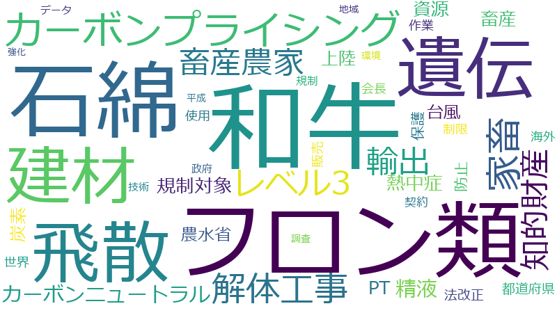

福山守

和牛、石綿、フロン類、輸出、資源、遺伝、飛散、防止、家畜、保護、建材、政府、カーボンニュートラル、カーボンプライシング、世界、台風、都道府県、使用、地域、平成、海外、知的財産、調査、レベル3、作業、法改正、環境、データ、制限、技術、畜産、畜産農家、解体工事、販売、農水省、PT、上陸、会長、契約、強化、炭素、熱中症、精液、規制、規制対象
和牛、フロン類、石綿、飛散、遺伝、建材、カーボンプライシング、家畜、解体工事、レベル3、輸出、畜産農家、知的財産、カーボンニュートラル、精液、規制対象、熱中症、資源、畜産、PT、上陸、炭素、台風、農水省、防止、保護、都道府県、販売、法改正、使用、会長、世界、作業、制限、海外、契約、規制、技術、データ、政府、平成、環境、調査、地域、強化
和牛
| 言及回数 | 28回 |
| 言及発言者数（参考人を含む） | 82人 |
2019-03-14 account_balance
…、今何が一番問題かというと、法的に、まずこれは、海外に対する輸出の、輸出といいますか外へ出る話をすれば、今、和牛という最高品質の、日本のこういう遺伝子を持った家畜がいますけれども、こういうものに対して、そういう流出を防ぐ…
…国内に対していろいろな形で、百八十万本ぐらい今生産されるということをちょっと聞いたこともあるんですけれども、和牛遺伝資源の国内での適正な流通を確保するために、精液、受精卵の購入者の登録制度や流通の監視体制を強化するトレー…
…このあたり、やはり地域によってもあると思うんですね。和牛でも、鹿児島とか宮崎とか、本当に和牛の、あるいは神戸牛、そういうふうなところと、比較的低い地域、いろいろあると思うんです。そのときに、どういうふうな形でそれが流れる…
…なところと、比較的低い地域、いろいろあると思うんです。そのときに、どういうふうな形でそれが流れるか。日本の和牛という名前だけでいいのであれば、かえって、メジャーなところよりマイナーの方がそういうのをやりやすい。そういう…
…も、私は腑に落ちなんで、これは新聞にもちょっと、報道にも出たことがあるんですけれども、現在は輸出されていない和牛が、一九九八年まで二百四十七頭の牛がアメリカの方に輸出された、そして精液約一万三千本が米国の方に渡っておると…
…こと、これが流れて今のオーストラリアのＷＡＧＹＵになっておるというふうなことも私自身は聞いております。これは和牛より肉質は当然劣るということでございますけれども、私は、この点についてちょっと納得がいかないと思うんです。…
…ともありましょうけれども、畜産というのは非常に難しい。私がある程度聞いた中の、整理した形で言いますと、国は和牛の遺伝資源が海外に流出すれば国内の畜産業がダメージを受けかねないと警戒してきた。これは事実でございます。畜産…
…います。畜産農家が改良を重ねて品質を高めた成果が海外に流れ、類似した肉牛が生産されると、ブランドが毀損され、和牛肉の輸出にも影響を及ぼしかねない。こうしたことから農水省は、二〇〇六年から七年まで和牛を含む家畜の遺伝資源…
…ブランドが毀損され、和牛肉の輸出にも影響を及ぼしかねない。こうしたことから農水省は、二〇〇六年から七年まで和牛を含む家畜の遺伝資源保護へ向けた検討会を設置し、しかし、家畜の遺伝にはばらつきがあり品質が必ずしも安定しない…
…。しかし、できなかった。そしてさらに、今回もやろうと、二月にそういうのをつくったというのも伺っております。こういう形の中で、この問題点ですね、和牛の改良を重ねた、こういう知的財産に関する話はどういうふうに思われますか。…
…れはやはり、そう簡単な話ではないと思うんですね。しかし、これは何としてもやり遂げなきゃいけない保護の問題で、和牛の保護のためにもやり遂げなきゃいけないというふうに思っております。最後でございますけれども、小里副大臣にち…
…す。また、今、豚コレラも大変な状況の中で、御活躍いただいております。今回、このような事案が出て、この日本の和牛というのは、まさに世界に誇る品種でございます。これをしっかり守るためには、我々も一生懸命、部会の中で、あるい…
2020-03-25 account_balance
…おはようございます。自由民主党の福山でございます。本日は、宮路先生の後、和牛遺伝資源の保護について質問させていただきます。若干かぶる点もございますけれども、視点、観点を変えた見方で御質問をさせていただきたいと思います。…
…すけれども、視点、観点を変えた見方で御質問をさせていただきたいと思います。私は、ちょうど一年前に、自民党で和牛遺伝資源の流通管理に関する専門検討ＰＴが立ち上がったときに、農林水産委員会でこの問題について質問をさせていた…
…関する専門検討ＰＴが立ち上がったときに、農林水産委員会でこの問題について質問をさせていただきました。そして、和牛の遺伝資源の流出を防ぐために法律が完備されていないことも指摘をさせていただきました。その後、専門ＰＴには私…
…も参加をさせていただき、さまざまな議論もさせていただきました。政府に提言も行いました。ＰＴにおいては、法律で和牛遺伝資源の輸出を制限できないかとのアイデアも議論されましたが、政府からは、輸出を法律で制限するのは難しいとの…
…輸出禁止が国際協定との関係で非常に難しいというのは理解をいたします。一年前も、実はそういった事情から和牛遺伝資源を知的財産権として認められないか質問をさせていただいて、種苗にはＵＰＯＶ条約があって国際的に育成者権が認めら…
…には条約がなく知的財産権にするのは難しいが検討すると、そのときに答弁いただきました。その結果、農林水産省は、和牛遺伝資源の知的財産的価値の保護強化に関する専門部会を設置し、知的財産に関する専門家などの意見を聞いて中間取り…
…出された家畜遺伝資源に係る不正競争の防止に関する法律案は、この不正競争防止法の仕組みを参考としたと伺いましたが、この新法や家畜改良増殖法の改正案により、具体的にどのように和牛遺伝資源を守っていくのか、お伺いをいたします。…
…的な仕組みだと思いますので、しっかりと運用をしていくということを心がけていただきたいと思います。また、今、和牛遺伝資源を国内利用に限る内容の契約が締結されていればと答弁をされましたが、今般の法整備では契約違反に対して差…
…は、関係者が大変な苦労をされて、知恵を絞り尽くして工夫されたものだと思っております。江藤大臣は、常日ごろから和牛の振興に熱心に取り組んでおられ、今回の基本計画や酪肉近基本計画の検討でも、和牛の飛躍的な生産基盤強化を図り、…
…ます。江藤大臣は、常日ごろから和牛の振興に熱心に取り組んでおられ、今回の基本計画や酪肉近基本計画の検討でも、和牛の飛躍的な生産基盤強化を図り、強力に和牛肉の輸出を推進する方針と伺っています。大臣お地元の宮崎牛は、先日、ア…
…に熱心に取り組んでおられ、今回の基本計画や酪肉近基本計画の検討でも、和牛の飛躍的な生産基盤強化を図り、強力に和牛肉の輸出を推進する方針と伺っています。大臣お地元の宮崎牛は、先日、アメリカで発表されたアカデミー賞のパーティ…
…の問題についておわびを兼ねながら質問をさせていただいたわけでございます。先ほど宮路先生も、大臣からいろいろ和牛のお話もお聞きしまして、本当に日本のすばらしい宝でございます。この和牛というのが、私もその過程で勉強させてい…
…。先ほど宮路先生も、大臣からいろいろ和牛のお話もお聞きしまして、本当に日本のすばらしい宝でございます。この和牛というのが、私もその過程で勉強させていただきまして、アメリカに渡り、そしてまた、今オーストラリアに渡った、研…
…なことも伺いました。ただ、日本のこの技術のすばらしさというのはもう十年、二十年も前のものであって、今の日本の和牛の品質というのは世界で誰も追いつけないだけのすばらしい状況であるということの勉強もさせていただきました。そ…
…言をしながら、そういう生産者、あるいはそういう販売者の皆さんとともに頑張っていきたい。そして、このすばらしい和牛がこれからの我が国の財産としてこれからもしっかり残りますように、今回の法案をしっかり運用していくことを私も誓…
フロン類
| 言及回数 | 16回 |
| 言及発言者数（参考人を含む） | 26人 |
2019-05-17 account_balance
…れた時間は十五分でございます。時間の関係上、すぐに御質問に入りたいと思います。よろしくお願いいたします。フロン類については、皆様御存じのとおり、二酸化炭素の数十倍から一万倍以上に及ぶ非常に強力な温室効果ガスであり、オゾ…
…での熱波などが報告されております。我が国では、四年連続で温室効果ガスの排出量が減少している中、増加を続けるフロン類により、省エネ、再エネ努力が打ち消されかねず、その排出抑制対策は極めて重要であります。フロン類対策の中で…
…加を続けるフロン類により、省エネ、再エネ努力が打ち消されかねず、その排出抑制対策は極めて重要であります。フロン類対策の中でも、特に十五年にわたって低迷を続ける廃棄時の回収率の向上を目指したものと理解をしておりますが、そ…
…っと総括をさせていただきたいと思います。改正案の説明資料によれば、現状では約半数の業務用冷凍空調機械しかフロン類の回収が行われておらず、残りの半数は、フロン類の回収をせずに廃棄をされているとのことであります。正直に回収…
…案の説明資料によれば、現状では約半数の業務用冷凍空調機械しかフロン類の回収が行われておらず、残りの半数は、フロン類の回収をせずに廃棄をされているとのことであります。正直に回収を行った者が損をしてしまう実態になっております…
…う実態になっております。全体の半数の機械が法律を守らずに不適正な処理をされ、ＣＯ2の数千倍の温室効果を持つフロン類が垂れ流されていたというのは、まさに言語道断であります。そのようなフリーライダーがのさばることは決して容認…
…すると、平成二十五年のフロン法改正、またモントリオール議定書改正を踏まえた昨年のオゾン層保護法の改正など、フロン類のライフサイクル全体を考えて、フロン類の生産量、使用量自体を減らしていくことも重要でありますし、世界の潮流…
…たモントリオール議定書改正を踏まえた昨年のオゾン層保護法の改正など、フロン類のライフサイクル全体を考えて、フロン類の生産量、使用量自体を減らしていくことも重要でありますし、世界の潮流であります。我が党では、フロン類対策…
…て、フロン類の生産量、使用量自体を減らしていくことも重要でありますし、世界の潮流であります。我が党では、フロン類対策をめぐる政策を幅広く模索、議論し、我が国のすぐれた環境技術を内外に展開し、我が国の力強い経済成長に発展…
…国のすぐれた環境技術を内外に展開し、我が国の力強い経済成長に発展する、貢献することを目標として、昨年の冬にフロン類対策推進議員連盟を立ち上げました。我が国のフロン類対策技術を一気に世界に広め、二〇三〇年には三十五兆円に拡…
…経済成長に発展する、貢献することを目標として、昨年の冬にフロン類対策推進議員連盟を立ち上げました。我が国のフロン類対策技術を一気に世界に広め、二〇三〇年には三十五兆円に拡大するとも言われる世界の冷凍冷蔵空調市場において、…
…球環境局長の方にちょっとお伺いしますけれども、日本で行っているフロン回収など、既に使用され、今後使用されるフロン類も含めたライフサイクル全体の取組を広げていってもらいたいと思っております。そこで、今現在、海外でのフロン…
…れるフロン類も含めたライフサイクル全体の取組を広げていってもらいたいと思っております。そこで、今現在、海外でのフロン類の回収状況、そして世界における日本の優位性、そして今後の展開をどのように環境局は考えておるんですか。…
…今いろいろ御答弁をいただきました。先ほど私が説明しました中で、フロン類対策推進議員連盟という言葉を使いましたけれども、昨年冬に、会長は甘利会長、そして会長代行は望月元環境大臣、そして小渕会長代理、そして丸川会長代理、実…
…大きいものがございますので、そういう両方、大臣経験者の皆さんばかりですけれども、望月先生の、そういう非常にフロン類のこの問題は大きな問題であるということで、このような議連をつくって進めようということで、去年の冬から始まっ…
…つ一つの災害、本当に時代が、こういう時代の地球温暖化という中で変わってきておりますので、今回のこの法改正のフロン類のこの問題につきましては非常に大きなものがあると思いますので、大臣以下の皆様方のますますの御活躍を、また要…
石綿
| 言及回数 | 18回 |
| 言及発言者数（参考人を含む） | 46人 |
2020-05-15 account_balance
…乗り切ることを心より願っておりまして、今回の大気汚染防止法の質問に入らせていただきたいと思います。まずは、石綿は数十年の潜伏期間を経て肺がんや中皮腫など重篤な健康被害を発生させるおそれがあることが知られております。国民…
…中皮腫など重篤な健康被害を発生させるおそれがあることが知られております。国民の健康を守るため、解体工事による石綿の飛散を防止することは極めて重要であると考えております。大気汚染防止法においては、平成七年の阪神・淡路大震…
…と考えております。大気汚染防止法においては、平成七年の阪神・淡路大震災による被害を受けた建築物の解体の際に石綿の飛散が問題となったことを受け、平成八年に規制を導入して以来、解体工事に伴う石綿飛散防止に取り組んできたとこ…
…害を受けた建築物の解体の際に石綿の飛散が問題となったことを受け、平成八年に規制を導入して以来、解体工事に伴う石綿飛散防止に取り組んできたところであります。平成十八年には、規制対象となる石綿含有建材の対象を拡大するほか、対…
…制を導入して以来、解体工事に伴う石綿飛散防止に取り組んできたところであります。平成十八年には、規制対象となる石綿含有建材の対象を拡大するほか、対象工事の規模要件を撤廃し、平成二十五年には、新たに解体工事前の石綿使用の有無…
…対象となる石綿含有建材の対象を拡大するほか、対象工事の規模要件を撤廃し、平成二十五年には、新たに解体工事前の石綿使用の有無の調査を義務づけるなど、更に規制が強化されたと承知をしております。こうした中、今なお石綿飛散防止…
…工事前の石綿使用の有無の調査を義務づけるなど、更に規制が強化されたと承知をしております。こうした中、今なお石綿飛散防止対策については課題があるものと認識をしておりますが、まず初めに、前回の改正である平成二十五年の改正に…
…大臣が御答弁いただいたこと、これについて、個別にまた伺ってまいりたいと思います。まず、今回の制度改正では、石綿含有成形板などの、飛散性の低いいわゆるレベル３建材まで規制対象を拡大することとされております。建築材料として…
…などの、飛散性の低いいわゆるレベル３建材まで規制対象を拡大することとされております。建築材料として使用された石綿の多くがレベル３建材に使用されたことを踏まえれば、これに規制対象を広げることには重要な意義があると考えており…
…ば、これに規制対象を広げることには重要な意義があると考えております。今後、レベル３建材の除去作業においても石綿の飛散防止が徹底される必要があると考えますが、レベル３建材の除去作業には具体的にどのような義務がかかるのか、…
…務づけることとされております。毎年膨大な件数の解体工事が行われており、特に、現在規制対象となっている吹きつけ石綿などいわゆるレベル１、２建材には作業実施の届出も義務づけられているところであります。石綿がない場合まで報告…
…なっている吹きつけ石綿などいわゆるレベル１、２建材には作業実施の届出も義務づけられているところであります。石綿がない場合まで報告させることによる解体工事業者の負担にも配慮が必要と考えられますが、なぜ石綿の有無にかかわら…
…ているところであります。石綿がない場合まで報告させることによる解体工事業者の負担にも配慮が必要と考えられますが、なぜ石綿の有無にかかわらず都道府県に事前調査の結果を報告をさせるのか、報告の意義についてお伺いいたします。…
…も簡単で結構でございますけれども、解体工事の規制強化とあわせて、大気汚染防止法において、今回初めて、災害時の石綿飛散防止に関する規定として国及び地方公共団体の責務を設けることとされております。豪雨や地震などの災害が相次…
…び地方公共団体の責務を設けることとされております。豪雨や地震などの災害が相次ぐ中、災害で損壊した建築物から石綿が飛散することを防止するためには、平常時から備えが必要で重要であることは論をまたないものであります。特に平常…
…防止するためには、平常時から備えが必要で重要であることは論をまたないものであります。特に平常時から建築物への石綿の使用の有無を把握しておくことが鍵となりますが、今後どのように把握を促進していくのか、お伺いしたいと思います…
それぞれ御答弁ありがとうございました。最後になりますけれども、小泉大臣の方から、大気汚染防止法の改正により、今後石綿飛散防止にどのように取り組んでいくのか、大臣の思いを述べていただければと思います。
…時間が参りましたので終わらせていただきます。最後に、この石綿というのは、特にレベル３建材、できた当時というのはまさに神がかり的であるとまで言われた建材であったようでございます。その後、環境の変化によってその都度その都度…
飛散
| 言及回数 | 13回 |
| 言及発言者数（参考人を含む） | 76人 |
2020-05-15 account_balance
…など重篤な健康被害を発生させるおそれがあることが知られております。国民の健康を守るため、解体工事による石綿の飛散を防止することは極めて重要であると考えております。大気汚染防止法においては、平成七年の阪神・淡路大震災によ…
…ております。大気汚染防止法においては、平成七年の阪神・淡路大震災による被害を受けた建築物の解体の際に石綿の飛散が問題となったことを受け、平成八年に規制を導入して以来、解体工事に伴う石綿飛散防止に取り組んできたところであ…
…受けた建築物の解体の際に石綿の飛散が問題となったことを受け、平成八年に規制を導入して以来、解体工事に伴う石綿飛散防止に取り組んできたところであります。平成十八年には、規制対象となる石綿含有建材の対象を拡大するほか、対象工…
…前の石綿使用の有無の調査を義務づけるなど、更に規制が強化されたと承知をしております。こうした中、今なお石綿飛散防止対策については課題があるものと認識をしておりますが、まず初めに、前回の改正である平成二十五年の改正により…
…こと、これについて、個別にまた伺ってまいりたいと思います。まず、今回の制度改正では、石綿含有成形板などの、飛散性の低いいわゆるレベル３建材まで規制対象を拡大することとされております。建築材料として使用された石綿の多くが…
…れに規制対象を広げることには重要な意義があると考えております。今後、レベル３建材の除去作業においても石綿の飛散防止が徹底される必要があると考えますが、レベル３建材の除去作業には具体的にどのような義務がかかるのか、お伺い…
今の御答弁は、レベル３建材について、作業実施の届出の対象としないとのことであります。適切に飛散防止を図ることができるのか、どのようにレベル３建材の除去作業における飛散防止を確保するのか、お伺いしたいと思います。
…方法の一つとして、一定の知見を有する者による事前調査が義務づけられることになります。適切な事前調査は適切な飛散防止措置の大前提であり、的確に調査を行うことができる知見を有する者が調査を行うことが重要であります。一方で…
…作業後の確認も御質問したかったんですけれども、時間の関係上、ちょっと省きます。災害時の飛散防止についてですけれども、これも簡単で結構でございますけれども、解体工事の規制強化とあわせて、大気汚染防止法において、今回初めて…
…単で結構でございますけれども、解体工事の規制強化とあわせて、大気汚染防止法において、今回初めて、災害時の石綿飛散防止に関する規定として国及び地方公共団体の責務を設けることとされております。豪雨や地震などの災害が相次ぐ中…
…公共団体の責務を設けることとされております。豪雨や地震などの災害が相次ぐ中、災害で損壊した建築物から石綿が飛散することを防止するためには、平常時から備えが必要で重要であることは論をまたないものであります。特に平常時から…
それぞれ御答弁ありがとうございました。最後になりますけれども、小泉大臣の方から、大気汚染防止法の改正により、今後石綿飛散防止にどのように取り組んでいくのか、大臣の思いを述べていただければと思います。
遺伝
| 言及回数 | 14回 |
| 言及発言者数（参考人を含む） | 103人 |
2019-03-14 account_balance
…まずこれは、海外に対する輸出の、輸出といいますか外へ出る話をすれば、今、和牛という最高品質の、日本のこういう遺伝子を持った家畜がいますけれども、こういうものに対して、そういう流出を防ぐための法律、こういうものが完備されて…
…に対していろいろな形で、百八十万本ぐらい今生産されるということをちょっと聞いたこともあるんですけれども、和牛遺伝資源の国内での適正な流通を確保するために、精液、受精卵の購入者の登録制度や流通の監視体制を強化するトレーサビ…
…りましょうけれども、畜産というのは非常に難しい。私がある程度聞いた中の、整理した形で言いますと、国は和牛の遺伝資源が海外に流出すれば国内の畜産業がダメージを受けかねないと警戒してきた。これは事実でございます。畜産農家が…
…れ、和牛肉の輸出にも影響を及ぼしかねない。こうしたことから農水省は、二〇〇六年から七年まで和牛を含む家畜の遺伝資源保護へ向けた検討会を設置し、しかし、家畜の遺伝にはばらつきがあり品質が必ずしも安定しないため、知的財産と…
…たことから農水省は、二〇〇六年から七年まで和牛を含む家畜の遺伝資源保護へ向けた検討会を設置し、しかし、家畜の遺伝にはばらつきがあり品質が必ずしも安定しないため、知的財産として保護するのが難しいとしてルールづくりが見送られ…
…り品質が必ずしも安定しないため、知的財産として保護するのが難しいとしてルールづくりが見送られた。以来、家畜の遺伝資源保護へ向けた法整備は進んでこなかった。現在は、受精卵や精液の管理、販売は、家畜改良増殖法に基づき、原則…
2020-03-25 account_balance
…おはようございます。自由民主党の福山でございます。本日は、宮路先生の後、和牛遺伝資源の保護について質問させていただきます。若干かぶる点もございますけれども、視点、観点を変えた見方で御質問をさせていただきたいと思います。…
…れども、視点、観点を変えた見方で御質問をさせていただきたいと思います。私は、ちょうど一年前に、自民党で和牛遺伝資源の流通管理に関する専門検討ＰＴが立ち上がったときに、農林水産委員会でこの問題について質問をさせていただき…
…専門検討ＰＴが立ち上がったときに、農林水産委員会でこの問題について質問をさせていただきました。そして、和牛の遺伝資源の流出を防ぐために法律が完備されていないことも指摘をさせていただきました。その後、専門ＰＴには私も参加…
…加をさせていただき、さまざまな議論もさせていただきました。政府に提言も行いました。ＰＴにおいては、法律で和牛遺伝資源の輸出を制限できないかとのアイデアも議論されましたが、政府からは、輸出を法律で制限するのは難しいとの見解…
…輸出禁止が国際協定との関係で非常に難しいというのは理解をいたします。一年前も、実はそういった事情から和牛遺伝資源を知的財産権として認められないか質問をさせていただいて、種苗にはＵＰＯＶ条約があって国際的に育成者権が認めら…
…条約がなく知的財産権にするのは難しいが検討すると、そのときに答弁いただきました。その結果、農林水産省は、和牛遺伝資源の知的財産的価値の保護強化に関する専門部会を設置し、知的財産に関する専門家などの意見を聞いて中間取りまと…
…うな不正な行為の結果できた成果物も差止めの対象としていると理解をしております。それでは、今回提出された家畜遺伝資源に係る不正競争の防止に関する法律案は、この不正競争防止法の仕組みを参考としたと伺いましたが、この新法や家…
…出された家畜遺伝資源に係る不正競争の防止に関する法律案は、この不正競争防止法の仕組みを参考としたと伺いましたが、この新法や家畜改良増殖法の改正案により、具体的にどのように和牛遺伝資源を守っていくのか、お伺いをいたします。…
…仕組みだと思いますので、しっかりと運用をしていくということを心がけていただきたいと思います。また、今、和牛遺伝資源を国内利用に限る内容の契約が締結されていればと答弁をされましたが、今般の法整備では契約違反に対して差止め…
建材
| 言及回数 | 10回 |
| 言及発言者数（参考人を含む） | 49人 |
2020-05-15 account_balance
…して以来、解体工事に伴う石綿飛散防止に取り組んできたところであります。平成十八年には、規制対象となる石綿含有建材の対象を拡大するほか、対象工事の規模要件を撤廃し、平成二十五年には、新たに解体工事前の石綿使用の有無の調査を…
…た伺ってまいりたいと思います。まず、今回の制度改正では、石綿含有成形板などの、飛散性の低いいわゆるレベル３建材まで規制対象を拡大することとされております。建築材料として使用された石綿の多くがレベル３建材に使用されたこと…
…いわゆるレベル３建材まで規制対象を拡大することとされております。建築材料として使用された石綿の多くがレベル３建材に使用されたことを踏まえれば、これに規制対象を広げることには重要な意義があると考えております。今後、レベル…
…使用されたことを踏まえれば、これに規制対象を広げることには重要な意義があると考えております。今後、レベル３建材の除去作業においても石綿の飛散防止が徹底される必要があると考えますが、レベル３建材の除去作業には具体的にどの…
…ることには重要な意義があると考えております。今後、レベル３建材の除去作業においても石綿の飛散防止が徹底される必要があると考えますが、レベル３建材の除去作業には具体的にどのような義務がかかるのか、お伺いしたいと思います。…
今の御答弁は、レベル３建材について、作業実施の届出の対象としないとのことであります。適切に飛散防止を図ることができるのか、どのようにレベル３建材の除去作業における飛散防止を確保するのか、お伺いしたいと思います。
…。毎年膨大な件数の解体工事が行われており、特に、現在規制対象となっている吹きつけ石綿などいわゆるレベル１、２建材には作業実施の届出も義務づけられているところであります。石綿がない場合まで報告させることによる解体工事業者…
…時間が参りましたので終わらせていただきます。最後に、この石綿というのは、特にレベル３建材、できた当時というのはまさに神がかり的であるとまで言われた建材であったようでございます。その後、環境の変化によってその都度その都度…
…す。最後に、この石綿というのは、特にレベル３建材、できた当時というのはまさに神がかり的であるとまで言われた建材であったようでございます。その後、環境の変化によってその都度その都度いろいろ問題が出てまいります。こういうこ…
カーボンプライシング
| 言及回数 | 9回 |
| 言及発言者数（参考人を含む） | 50人 |
2021-03-09 account_balance
…大変なことだと思いますけれども、どうかよろしくお願いを申し上げたいと思います。これに関連しまして、カーボンプライシングについて大臣に御質問いたします。カーボンニュートラルの実現に向けて小泉大臣が力を入れてこられたカー…
…ングについて大臣に御質問いたします。カーボンニュートラルの実現に向けて小泉大臣が力を入れてこられたカーボンプライシングについて、前進の年にする決意との力強い表明がありました。昨年末に総理から小泉大臣、梶山経産大臣に対し…
…力強い表明がありました。昨年末に総理から小泉大臣、梶山経産大臣に対して、両省連携して成長戦略に資するカーボンプライシングの検討を行うようにとの指示があったことは、これまでの政府のカーボンプライシングに対するスタンスを踏ま…
…携して成長戦略に資するカーボンプライシングの検討を行うようにとの指示があったことは、これまでの政府のカーボンプライシングに対するスタンスを踏まえると、歴史的なことではないかと思います。環境省では、カーボンプライシングの…
…のカーボンプライシングに対するスタンスを踏まえると、歴史的なことではないかと思います。環境省では、カーボンプライシングの活用に関する小委員会を今年に入ってから二回開催して、議論を始めています。カーボンプライシングと一口…
…では、カーボンプライシングの活用に関する小委員会を今年に入ってから二回開催して、議論を始めています。カーボンプライシングと一口に言っても、炭素税や排出量取引制度、ＥＵなどで検討が行われている炭素国境調整措置への対応など様…
…で検討が行われている炭素国境調整措置への対応など様々なものがあり、また、産業界からは引き続き慎重な声も上がっています。こうした中で、成長戦略に資するカーボンプライシングの検討にかける大臣の思いをお伺いしたいと思います。…
…このカーボンプライシングの導入に当たっては、それによって我が国の産業あるいは国際競争力が奪われたり、カーボンニュートラルに向けた民間投資やイノベーションの原資が奪われたりすることがないようにしないといけません。また、現時…
…ば減免や還付措置が、また、排出量取引制度であれば無償割当てなどが取り入れられていると聞いています。カーボンプライシングの制度設計に当たっては、こうした様々な懸念に対する配慮が必要であると考えますので、本日は時間の関係上…
家畜
| 言及回数 | 11回 |
| 言及発言者数（参考人を含む） | 139人 |
2019-03-14 account_balance
…密輸出されて、これが氷山の一角なんだろうなというふうな認識でおりました。ところが、この後、農水省が一月に、家畜伝染病予防法違反で大阪府警に告発をいたしました。その結果、捜査した形が流れてきたのが、この三月三日に載ったわ…
…済みません、いろいろ、たくさん聞きたいことがあるので、時間、はしょりますけれども。今回は家畜伝染病予防法の違反容疑で府警に告発をした。ただ、同法律は、今言われた、家畜の伝染疾病の発生や流行を防ぐことが目的である。家畜の…
…間、はしょりますけれども。今回は家畜伝染病予防法の違反容疑で府警に告発をした。ただ、同法律は、今言われた、家畜の伝染疾病の発生や流行を防ぐことが目的である。家畜の輸出規制が主な趣旨ではないわけですよね。さらに、今回、…
…の違反容疑で府警に告発をした。ただ、同法律は、今言われた、家畜の伝染疾病の発生や流行を防ぐことが目的である。家畜の輸出規制が主な趣旨ではないわけですよね。さらに、今回、畜産農家がどういう違反かというと、家畜改良増殖法上…
…目的である。家畜の輸出規制が主な趣旨ではないわけですよね。さらに、今回、畜産農家がどういう違反かというと、家畜改良増殖法上の問題が指摘をされておる。この人が罪になったと決まっていないのでこれ以上のことは言いませんけれど…
…外に対する輸出の、輸出といいますか外へ出る話をすれば、今、和牛という最高品質の、日本のこういう遺伝子を持った家畜がいますけれども、こういうものに対して、そういう流出を防ぐための法律、こういうものが完備されていないです、ま…
…毀損され、和牛肉の輸出にも影響を及ぼしかねない。こうしたことから農水省は、二〇〇六年から七年まで和牛を含む家畜の遺伝資源保護へ向けた検討会を設置し、しかし、家畜の遺伝にはばらつきがあり品質が必ずしも安定しないため、知的…
…こうしたことから農水省は、二〇〇六年から七年まで和牛を含む家畜の遺伝資源保護へ向けた検討会を設置し、しかし、家畜の遺伝にはばらつきがあり品質が必ずしも安定しないため、知的財産として保護するのが難しいとしてルールづくりが見…
…きがあり品質が必ずしも安定しないため、知的財産として保護するのが難しいとしてルールづくりが見送られた。以来、家畜の遺伝資源保護へ向けた法整備は進んでこなかった。現在は、受精卵や精液の管理、販売は、家畜改良増殖法に基づき…
…見送られた。以来、家畜の遺伝資源保護へ向けた法整備は進んでこなかった。現在は、受精卵や精液の管理、販売は、家畜改良増殖法に基づき、原則として都道府県が許可した施設に限られているが、販売先の制限はなく、誰にでも売れる状況…
2020-03-25 account_balance
…で制限するのは難しいとの見解が示されました。このため、法的に輸出制限ができないことから、長い間、畜産農家や家畜改良関係者に輸出の自粛をお願いし、輸出に向けた動きがあれば関係者で説得に当たるという非常に大変な努力を求めて…
…て認められないか質問をさせていただいて、種苗にはＵＰＯＶ条約があって国際的に育成者権が認められておりますが、家畜には条約がなく知的財産権にするのは難しいが検討すると、そのときに答弁いただきました。その結果、農林水産省は、…
…のような不正な行為の結果できた成果物も差止めの対象としていると理解をしております。それでは、今回提出された家畜遺伝資源に係る不正競争の防止に関する法律案は、この不正競争防止法の仕組みを参考としたと伺いましたが、この新法…
…出された家畜遺伝資源に係る不正競争の防止に関する法律案は、この不正競争防止法の仕組みを参考としたと伺いましたが、この新法や家畜改良増殖法の改正案により、具体的にどのように和牛遺伝資源を守っていくのか、お伺いをいたします。…
解体工事
| 言及回数 | 6回 |
| 言及発言者数（参考人を含む） | 33人 |
2020-05-15 account_balance
…経て肺がんや中皮腫など重篤な健康被害を発生させるおそれがあることが知られております。国民の健康を守るため、解体工事による石綿の飛散を防止することは極めて重要であると考えております。大気汚染防止法においては、平成七年の阪…
…震災による被害を受けた建築物の解体の際に石綿の飛散が問題となったことを受け、平成八年に規制を導入して以来、解体工事に伴う石綿飛散防止に取り組んできたところであります。平成十八年には、規制対象となる石綿含有建材の対象を拡大…
…には、規制対象となる石綿含有建材の対象を拡大するほか、対象工事の規模要件を撤廃し、平成二十五年には、新たに解体工事前の石綿使用の有無の調査を義務づけるなど、更に規制が強化されたと承知をしております。こうした中、今なお石…
…。今回の制度改正により、事前調査結果の都道府県への報告を義務づけることとされております。毎年膨大な件数の解体工事が行われており、特に、現在規制対象となっている吹きつけ石綿などいわゆるレベル１、２建材には作業実施の届出も…
…１、２建材には作業実施の届出も義務づけられているところであります。石綿がない場合まで報告させることによる解体工事業者の負担にも配慮が必要と考えられますが、なぜ石綿の有無にかかわらず都道府県に事前調査の結果を報告をさせる…
…の関係上、ちょっと省きます。災害時の飛散防止についてですけれども、これも簡単で結構でございますけれども、解体工事の規制強化とあわせて、大気汚染防止法において、今回初めて、災害時の石綿飛散防止に関する規定として国及び地方…
レベル3
| 言及回数 | 7回 |
| 言及発言者数（参考人を含む） | 85人 |
2020-05-15 account_balance
…別にまた伺ってまいりたいと思います。まず、今回の制度改正では、石綿含有成形板などの、飛散性の低いいわゆるレベル３建材まで規制対象を拡大することとされております。建築材料として使用された石綿の多くがレベル３建材に使用され…
…の低いいわゆるレベル３建材まで規制対象を拡大することとされております。建築材料として使用された石綿の多くがレベル３建材に使用されたことを踏まえれば、これに規制対象を広げることには重要な意義があると考えております。今後、…
…建材に使用されたことを踏まえれば、これに規制対象を広げることには重要な意義があると考えております。今後、レベル３建材の除去作業においても石綿の飛散防止が徹底される必要があると考えますが、レベル３建材の除去作業には具体的…
…ることには重要な意義があると考えております。今後、レベル３建材の除去作業においても石綿の飛散防止が徹底される必要があると考えますが、レベル３建材の除去作業には具体的にどのような義務がかかるのか、お伺いしたいと思います。…
今の御答弁は、レベル３建材について、作業実施の届出の対象としないとのことであります。適切に飛散防止を図ることができるのか、どのようにレベル３建材の除去作業における飛散防止を確保するのか、お伺いしたいと思います。
…時間が参りましたので終わらせていただきます。最後に、この石綿というのは、特にレベル３建材、できた当時というのはまさに神がかり的であるとまで言われた建材であったようでございます。その後、環境の変化によってその都度その都度…
輸出
| 言及回数 | 15回 |
| 言及発言者数（参考人を含む） | 516人 |
2019-03-14 account_balance
…ない部分もあったと思いますけれども、今、豪州のＷＡＧＹＵという、こういう形で、これについても、こういうのが密輸出されて、これが氷山の一角なんだろうなというふうな認識でおりました。ところが、この後、農水省が一月に、家畜伝…
…容疑で府警に告発をした。ただ、同法律は、今言われた、家畜の伝染疾病の発生や流行を防ぐことが目的である。家畜の輸出規制が主な趣旨ではないわけですよね。さらに、今回、畜産農家がどういう違反かというと、家畜改良増殖法上の問題…
…で、数百万で売ったということなんですね。これは、今何が一番問題かというと、法的に、まずこれは、海外に対する輸出の、輸出といいますか外へ出る話をすれば、今、和牛という最高品質の、日本のこういう遺伝子を持った家畜がいますけ…
…万で売ったということなんですね。これは、今何が一番問題かというと、法的に、まずこれは、海外に対する輸出の、輸出といいますか外へ出る話をすれば、今、和牛という最高品質の、日本のこういう遺伝子を持った家畜がいますけれども、…
…きしましたけれども、私は腑に落ちなんで、これは新聞にもちょっと、報道にも出たことがあるんですけれども、現在は輸出されていない和牛が、一九九八年まで二百四十七頭の牛がアメリカの方に輸出された、そして精液約一万三千本が米国の…
…も出たことがあるんですけれども、現在は輸出されていない和牛が、一九九八年まで二百四十七頭の牛がアメリカの方に輸出された、そして精液約一万三千本が米国の方に渡っておるということ、これが流れて今のオーストラリアのＷＡＧＹＵに…
…畜産農家が改良を重ねて品質を高めた成果が海外に流れ、類似した肉牛が生産されると、ブランドが毀損され、和牛肉の輸出にも影響を及ぼしかねない。こうしたことから農水省は、二〇〇六年から七年まで和牛を含む家畜の遺伝資源保護へ向…
2020-03-25 account_balance
…いただき、さまざまな議論もさせていただきました。政府に提言も行いました。ＰＴにおいては、法律で和牛遺伝資源の輸出を制限できないかとのアイデアも議論されましたが、政府からは、輸出を法律で制限するのは難しいとの見解が示されま…
…ました。ＰＴにおいては、法律で和牛遺伝資源の輸出を制限できないかとのアイデアも議論されましたが、政府からは、輸出を法律で制限するのは難しいとの見解が示されました。このため、法的に輸出制限ができないことから、長い間、畜産…
…デアも議論されましたが、政府からは、輸出を法律で制限するのは難しいとの見解が示されました。このため、法的に輸出制限ができないことから、長い間、畜産農家や家畜改良関係者に輸出の自粛をお願いし、輸出に向けた動きがあれば関係…
…しいとの見解が示されました。このため、法的に輸出制限ができないことから、長い間、畜産農家や家畜改良関係者に輸出の自粛をお願いし、輸出に向けた動きがあれば関係者で説得に当たるという非常に大変な努力を求めてまいりました。今…
…した。このため、法的に輸出制限ができないことから、長い間、畜産農家や家畜改良関係者に輸出の自粛をお願いし、輸出に向けた動きがあれば関係者で説得に当たるという非常に大変な努力を求めてまいりました。今般の法改正により、国が…
…自粛をお願いし、輸出に向けた動きがあれば関係者で説得に当たるという非常に大変な努力を求めてまいりました。今般の法改正により、国が輸出を法律で一律に禁止するということができるようになるのかどうか、改めてお伺いをいたします。…
…輸出禁止が国際協定との関係で非常に難しいというのは理解をいたします。一年前も、実はそういった事情から和牛遺伝資源を知的財産権として認められないか質問をさせていただいて、種苗にはＵＰＯＶ条約があって国際的に育成者権が認めら…
…取り組んでおられ、今回の基本計画や酪肉近基本計画の検討でも、和牛の飛躍的な生産基盤強化を図り、強力に和牛肉の輸出を推進する方針と伺っています。大臣お地元の宮崎牛は、先日、アメリカで発表されたアカデミー賞のパーティーでも振…
…っています。大臣お地元の宮崎牛は、先日、アメリカで発表されたアカデミー賞のパーティーでも振る舞われたと報道もありました。今回の二法案により牛肉の輸出拡大をどのように進めていくのか、大臣のお考えをお伺いしたいと思います。…
…した。また、大臣からも、これからの海外展開についてのお話もいただきました。実は、昨年三月三日に、海外に違法輸出といいますか、この問題が起きたのは去年の三月三日でございます。これは、大阪府警の方が逮捕、拘束いたしまして、…
畜産農家
| 言及回数 | 6回 |
| 言及発言者数（参考人を含む） | 63人 |
2019-03-14 account_balance
…い。その問題について、ちょっとやらせていただきたいと思います。実は、三月三日の日に、我がふるさと徳島で、畜産農家にとって激震が走りました。それは、凍結精液あるいは受精卵、これが販売元が徳島というふうに、某大手新聞の西日…
…伝染疾病の発生や流行を防ぐことが目的である。家畜の輸出規制が主な趣旨ではないわけですよね。さらに、今回、畜産農家がどういう違反かというと、家畜改良増殖法上の問題が指摘をされておる。この人が罪になったと決まっていないので…
…牛の遺伝資源が海外に流出すれば国内の畜産業がダメージを受けかねないと警戒してきた。これは事実でございます。畜産農家が改良を重ねて品質を高めた成果が海外に流れ、類似した肉牛が生産されると、ブランドが毀損され、和牛肉の輸出に…
2020-03-25 account_balance
…出を法律で制限するのは難しいとの見解が示されました。このため、法的に輸出制限ができないことから、長い間、畜産農家や家畜改良関係者に輸出の自粛をお願いし、輸出に向けた動きがあれば関係者で説得に当たるという非常に大変な努力…
…場では、そのような契約はどのくらい結ばれていて、今後どのように普及をしていくお考えでしょうか。また、全部の畜産農家と精液の販売業者が契約を結ぶことは、大変な手間がかかります。この点についても、どのような対応を検討されてい…
…畜産農家は高齢化が大変進んでおり、契約と言われても難しくて敷居が高いので、丁寧に説明をして普及を進めていっていただきたいと思います。今回の法律は、関係者が大変な苦労をされて、知恵を絞り尽くして工夫されたものだと思ってお…
知的財産
| 言及回数 | 8回 |
| 言及発言者数（参考人を含む） | 167人 |
2019-03-14 account_balance
…出したそうなんですけれども、そういうふうなことが言われております。やはり、一番のこれからの問題というのは知的財産と私は思っているんですけれども、こういう問題の中で、先ほど海外のいろいろ規制、あるいはそういう話もお聞きし…
…はそのときの状況で、今はもう口蹄疫からいろいろそういうものがあった問題でとまっている、これもわかります。知的財産、先ほど言いましたけれども、畜産においては非常にそれが絞りにくい。先ほど話もございましたけれども、サクラン…
…ざいましたけれども、サクランボあるいはブドウあるいはイチゴ、こういうものについては、ある程度の形でできる、知的財産としてできるということもありましょうけれども、畜産というのは非常に難しい。私がある程度聞いた中の、整理し…
…畜の遺伝資源保護へ向けた検討会を設置し、しかし、家畜の遺伝にはばらつきがあり品質が必ずしも安定しないため、知的財産として保護するのが難しいとしてルールづくりが見送られた。以来、家畜の遺伝資源保護へ向けた法整備は進んでこな…
…いるが、販売先の制限はなく、誰にでも売れる状況になっている。牛の資源は、植物とは先ほど言ったように異なり、知的財産として保護する仕組みをこれまで設けることができなかった。そういうふうなこと。難しいんですけれども、ただ、そ…
…。しかし、できなかった。そしてさらに、今回もやろうと、二月にそういうのをつくったというのも伺っております。こういう形の中で、この問題点ですね、和牛の改良を重ねた、こういう知的財産に関する話はどういうふうに思われますか。…
2020-03-25 account_balance
…が国際協定との関係で非常に難しいというのは理解をいたします。一年前も、実はそういった事情から和牛遺伝資源を知的財産権として認められないか質問をさせていただいて、種苗にはＵＰＯＶ条約があって国際的に育成者権が認められており…
…をさせていただいて、種苗にはＵＰＯＶ条約があって国際的に育成者権が認められておりますが、家畜には条約がなく知的財産権にするのは難しいが検討すると、そのときに答弁いただきました。その結果、農林水産省は、和牛遺伝資源の知的財…
…的財産権にするのは難しいが検討すると、そのときに答弁いただきました。その結果、農林水産省は、和牛遺伝資源の知的財産的価値の保護強化に関する専門部会を設置し、知的財産に関する専門家などの意見を聞いて中間取りまとめを公表し、…
…弁いただきました。その結果、農林水産省は、和牛遺伝資源の知的財産的価値の保護強化に関する専門部会を設置し、知的財産に関する専門家などの意見を聞いて中間取りまとめを公表し、法案を提出するに至ったと承知をしております。これ…
…ります。これまで長い間、畜産関係者は、法律により海外への不正な持ち出しを防止することを望んできましたが、知的財産権という概念では法制化に至らなかったわけですけれども、今回どのような点を工夫されて法制化に至ったのか、御説…
カーボンニュートラル
| 言及回数 | 9回 |
| 言及発言者数（参考人を含む） | 231人 |
2021-03-09 account_balance
…おはようございます。時間が短いものですから、すぐに質問に入らせていただきたいと思います。まず、カーボンニュートラルについて小泉大臣にお伺いしたいと思います。昨年、臨時国会で菅総理が二〇五〇年カーボンニュートラルを宣言…
…、カーボンニュートラルについて小泉大臣にお伺いしたいと思います。昨年、臨時国会で菅総理が二〇五〇年カーボンニュートラルを宣言されました。このことは、国の内外を問わず、与野党を問わず、業界を問わず高い評価をされております…
…わず高い評価をされております。自民党でも、昨年十一月にいち早く、二階幹事長を本部長とする二〇五〇年カーボンニュートラル実現推進本部を設置、私も事務局次長として参加をして、カーボンニュートラルの実現に向けた活発な議論を行…
…事長を本部長とする二〇五〇年カーボンニュートラル実現推進本部を設置、私も事務局次長として参加をして、カーボンニュートラルの実現に向けた活発な議論を行っているところであります。二〇五〇年カーボンニュートラルの実現に当たっ…
…て参加をして、カーボンニュートラルの実現に向けた活発な議論を行っているところであります。二〇五〇年カーボンニュートラルの実現に当たっては、その前段階の二〇三〇年の排出削減目標をどのようなものにするか、これが今後の大きな…
…ったというか、ああいう形で出されて非常に悔しい思いもしたと思いますけれども、今年のＣＯＰ26は、このカーボンニュートラルの日本の推進を、まさに推進役を小泉大臣がやられる。まさにそういう担当になったと思います。行かれたとき…
…、話に出ましたけれども、地方脱炭素実現についての会議についての質問をさせていただきたいと思います。カーボンニュートラルの実現のためには、再生可能エネルギーや電動車、断熱性能の高い住宅や建築物など、今ある脱炭素技術を地域…
…気象条件、様々な暮らし方、様々ななりわいがあり、脱炭素化の困難さも様々である中で、環境省の施策だけでカーボンニュートラルが実現できるわけではなく、関係府省が一体となって制度、支援策を総動員し、取り組んでいく必要があります…
…申し上げたいと思います。これに関連しまして、カーボンプライシングについて大臣に御質問いたします。カーボンニュートラルの実現に向けて小泉大臣が力を入れてこられたカーボンプライシングについて、前進の年にする決意との力強い…
…このカーボンプライシングの導入に当たっては、それによって我が国の産業あるいは国際競争力が奪われたり、カーボンニュートラルに向けた民間投資やイノベーションの原資が奪われたりすることがないようにしないといけません。また、現時…
精液
| 言及回数 | 5回 |
| 言及発言者数（参考人を含む） | 42人 |
2019-03-14 account_balance
…きたいと思います。実は、三月三日の日に、我がふるさと徳島で、畜産農家にとって激震が走りました。それは、凍結精液あるいは受精卵、これが販売元が徳島というふうに、某大手新聞の西日本版に大きく出ました。その日、いろいろな形で…
…されるということをちょっと聞いたこともあるんですけれども、和牛遺伝資源の国内での適正な流通を確保するために、精液、受精卵の購入者の登録制度や流通の監視体制を強化するトレーサビリティー制度、こういうものをやったらどうかとい…
…ですけれども、現在は輸出されていない和牛が、一九九八年まで二百四十七頭の牛がアメリカの方に輸出された、そして精液約一万三千本が米国の方に渡っておるということ、これが流れて今のオーストラリアのＷＡＧＹＵになっておるというふ…
…としてルールづくりが見送られた。以来、家畜の遺伝資源保護へ向けた法整備は進んでこなかった。現在は、受精卵や精液の管理、販売は、家畜改良増殖法に基づき、原則として都道府県が許可した施設に限られているが、販売先の制限はなく…
2020-03-25 account_balance
…そのような契約はどのくらい結ばれていて、今後どのように普及をしていくお考えでしょうか。また、全部の畜産農家と精液の販売業者が契約を結ぶことは、大変な手間がかかります。この点についても、どのような対応を検討されているのか、…
規制対象
| 言及回数 | 5回 |
| 言及発言者数（参考人を含む） | 91人 |
2020-05-15 account_balance
…平成八年に規制を導入して以来、解体工事に伴う石綿飛散防止に取り組んできたところであります。平成十八年には、規制対象となる石綿含有建材の対象を拡大するほか、対象工事の規模要件を撤廃し、平成二十五年には、新たに解体工事前の石…
…いりたいと思います。まず、今回の制度改正では、石綿含有成形板などの、飛散性の低いいわゆるレベル３建材まで規制対象を拡大することとされております。建築材料として使用された石綿の多くがレベル３建材に使用されたことを踏まえれ…
…こととされております。建築材料として使用された石綿の多くがレベル３建材に使用されたことを踏まえれば、これに規制対象を広げることには重要な意義があると考えております。今後、レベル３建材の除去作業においても石綿の飛散防止が…
…結果の都道府県への報告を義務づけることとされております。毎年膨大な件数の解体工事が行われており、特に、現在規制対象となっている吹きつけ石綿などいわゆるレベル１、２建材には作業実施の届出も義務づけられているところであります…
…後、支援について佐藤副大臣の方にちょっとお伺いしたいと思います。また、改正法の実効性を確保するためには、規制対象となる作業が大幅に増加する中で、都道府県が適切に事業者を指導していくことが重要となるということです。都道府…
熱中症
| 言及回数 | 5回 |
| 言及発言者数（参考人を含む） | 95人 |
2021-03-09 account_balance
…の慎重かつ丁寧な議論を要望させていただきたいと思います。よろしくお願いいたします。最後になりますけれども、熱中症について堀内副大臣に御質問いたします。気候変動の影響の中でも、近年は、猛暑による熱中症が原因で、救急車で…
…になりますけれども、熱中症について堀内副大臣に御質問いたします。気候変動の影響の中でも、近年は、猛暑による熱中症が原因で、救急車で運ばれる方や亡くなられる方が増加をしています。昨夏の救急搬送患者数は過去三番目に多い約六…
…い約六万五千人であり、死亡者数は千四百人以上です。平成三十年以降、死亡者は千人超えが続いており、その約八割は熱中症に弱い高齢者です。このような状況下で、私としても、自民党の有志議員と熱中症対策議員連盟を令和元年から立ち…
…人超えが続いており、その約八割は熱中症に弱い高齢者です。このような状況下で、私としても、自民党の有志議員と熱中症対策議員連盟を令和元年から立ち上げ、昨年の七月には政府に対して提言も行いました。今夏に向けては、春から取…
…ち上げ、昨年の七月には政府に対して提言も行いました。今夏に向けては、春から取組を始めて、関係省庁の連携や対策の強化を一層進める必要があると思います。そこで、今後の政府の熱中症対策に関する取組について、お願いいたします。…
資源
| 言及回数 | 14回 |
| 言及発言者数（参考人を含む） | 756人 |
2019-03-14 account_balance
…していろいろな形で、百八十万本ぐらい今生産されるということをちょっと聞いたこともあるんですけれども、和牛遺伝資源の国内での適正な流通を確保するために、精液、受精卵の購入者の登録制度や流通の監視体制を強化するトレーサビリテ…
…しょうけれども、畜産というのは非常に難しい。私がある程度聞いた中の、整理した形で言いますと、国は和牛の遺伝資源が海外に流出すれば国内の畜産業がダメージを受けかねないと警戒してきた。これは事実でございます。畜産農家が改良…
…和牛肉の輸出にも影響を及ぼしかねない。こうしたことから農水省は、二〇〇六年から七年まで和牛を含む家畜の遺伝資源保護へ向けた検討会を設置し、しかし、家畜の遺伝にはばらつきがあり品質が必ずしも安定しないため、知的財産として…
…質が必ずしも安定しないため、知的財産として保護するのが難しいとしてルールづくりが見送られた。以来、家畜の遺伝資源保護へ向けた法整備は進んでこなかった。現在は、受精卵や精液の管理、販売は、家畜改良増殖法に基づき、原則とし…
…、原則として都道府県が許可した施設に限られているが、販売先の制限はなく、誰にでも売れる状況になっている。牛の資源は、植物とは先ほど言ったように異なり、知的財産として保護する仕組みをこれまで設けることができなかった。そうい…
2020-03-25 account_balance
…おはようございます。自由民主党の福山でございます。本日は、宮路先生の後、和牛遺伝資源の保護について質問させていただきます。若干かぶる点もございますけれども、視点、観点を変えた見方で御質問をさせていただきたいと思います。…
…も、視点、観点を変えた見方で御質問をさせていただきたいと思います。私は、ちょうど一年前に、自民党で和牛遺伝資源の流通管理に関する専門検討ＰＴが立ち上がったときに、農林水産委員会でこの問題について質問をさせていただきまし…
…検討ＰＴが立ち上がったときに、農林水産委員会でこの問題について質問をさせていただきました。そして、和牛の遺伝資源の流出を防ぐために法律が完備されていないことも指摘をさせていただきました。その後、専門ＰＴには私も参加をさ…
…させていただき、さまざまな議論もさせていただきました。政府に提言も行いました。ＰＴにおいては、法律で和牛遺伝資源の輸出を制限できないかとのアイデアも議論されましたが、政府からは、輸出を法律で制限するのは難しいとの見解が示…
…輸出禁止が国際協定との関係で非常に難しいというのは理解をいたします。一年前も、実はそういった事情から和牛遺伝資源を知的財産権として認められないか質問をさせていただいて、種苗にはＵＰＯＶ条約があって国際的に育成者権が認めら…
…がなく知的財産権にするのは難しいが検討すると、そのときに答弁いただきました。その結果、農林水産省は、和牛遺伝資源の知的財産的価値の保護強化に関する専門部会を設置し、知的財産に関する専門家などの意見を聞いて中間取りまとめを…
…不正な行為の結果できた成果物も差止めの対象としていると理解をしております。それでは、今回提出された家畜遺伝資源に係る不正競争の防止に関する法律案は、この不正競争防止法の仕組みを参考としたと伺いましたが、この新法や家畜改…
…出された家畜遺伝資源に係る不正競争の防止に関する法律案は、この不正競争防止法の仕組みを参考としたと伺いましたが、この新法や家畜改良増殖法の改正案により、具体的にどのように和牛遺伝資源を守っていくのか、お伺いをいたします。…
…みだと思いますので、しっかりと運用をしていくということを心がけていただきたいと思います。また、今、和牛遺伝資源を国内利用に限る内容の契約が締結されていればと答弁をされましたが、今般の法整備では契約違反に対して差止め請求…
畜産
| 言及回数 | 6回 |
| 言及発言者数（参考人を含む） | 189人 |
2019-03-14 account_balance
…はい。その問題について、ちょっとやらせていただきたいと思います。実は、三月三日の日に、我がふるさと徳島で、畜産農家にとって激震が走りました。それは、凍結精液あるいは受精卵、これが販売元が徳島というふうに、某大手新聞の西…
…の伝染疾病の発生や流行を防ぐことが目的である。家畜の輸出規制が主な趣旨ではないわけですよね。さらに、今回、畜産農家がどういう違反かというと、家畜改良増殖法上の問題が指摘をされておる。この人が罪になったと決まっていないの…
…決まっていないのでこれ以上のことは言いませんけれども、そういう法律の中でやっておる。これは、品種改良を進めて畜産振興を図る目的で定められておって、販売先は制限していないんです。売ってくれと言えば売る。だから、電話がかかっ…
…からいろいろそういうものがあった問題でとまっている、これもわかります。知的財産、先ほど言いましたけれども、畜産においては非常にそれが絞りにくい。先ほど話もございましたけれども、サクランボあるいはブドウあるいはイチゴ、こ…
…イチゴ、こういうものについては、ある程度の形でできる、知的財産としてできるということもありましょうけれども、畜産というのは非常に難しい。私がある程度聞いた中の、整理した形で言いますと、国は和牛の遺伝資源が海外に流出すれ…
…は非常に難しい。私がある程度聞いた中の、整理した形で言いますと、国は和牛の遺伝資源が海外に流出すれば国内の畜産業がダメージを受けかねないと警戒してきた。これは事実でございます。畜産農家が改良を重ねて品質を高めた成果が海…
…和牛の遺伝資源が海外に流出すれば国内の畜産業がダメージを受けかねないと警戒してきた。これは事実でございます。畜産農家が改良を重ねて品質を高めた成果が海外に流れ、類似した肉牛が生産されると、ブランドが毀損され、和牛肉の輸出…
…れども、小里副大臣にちょっとお願い、またお考えを整理していただきたいんですけれども、小里副大臣は、特に農業、畜産については大変造詣の深い副大臣でございます。また、今、豚コレラも大変な状況の中で、御活躍いただいております。…
2020-03-25 account_balance
…輸出を法律で制限するのは難しいとの見解が示されました。このため、法的に輸出制限ができないことから、長い間、畜産農家や家畜改良関係者に輸出の自粛をお願いし、輸出に向けた動きがあれば関係者で説得に当たるという非常に大変な努…
…門家などの意見を聞いて中間取りまとめを公表し、法案を提出するに至ったと承知をしております。これまで長い間、畜産関係者は、法律により海外への不正な持ち出しを防止することを望んできましたが、知的財産権という概念では法制化に…
…現場では、そのような契約はどのくらい結ばれていて、今後どのように普及をしていくお考えでしょうか。また、全部の畜産農家と精液の販売業者が契約を結ぶことは、大変な手間がかかります。この点についても、どのような対応を検討されて…
…畜産農家は高齢化が大変進んでおり、契約と言われても難しくて敷居が高いので、丁寧に説明をして普及を進めていっていただきたいと思います。今回の法律は、関係者が大変な苦労をされて、知恵を絞り尽くして工夫されたものだと思ってお…
PT
| 言及回数 | 5回 |
| 言及発言者数（参考人を含む） | 122人 |
2019-03-14 account_balance
…実は、きのう、初めて、この問題について自民党のＰＴが立ち上がりました。私も、地元からこういうのが出たので、入れていただいております。これはやはり、そう簡単な話ではないと思うんですね。しかし、これは何としてもやり遂げなきゃ…
…いうのは、まさに世界に誇る品種でございます。これをしっかり守るためには、我々も一生懸命、部会の中で、あるいはＰＴの中で意見を出してまいりたいと思うんですけれども、やはり、政府の方が一体となってしっかりとやっていただくこと…
2020-03-25 account_balance
…質問をさせていただきたいと思います。私は、ちょうど一年前に、自民党で和牛遺伝資源の流通管理に関する専門検討ＰＴが立ち上がったときに、農林水産委員会でこの問題について質問をさせていただきました。そして、和牛の遺伝資源の流…
…して、和牛の遺伝資源の流出を防ぐために法律が完備されていないことも指摘をさせていただきました。その後、専門ＰＴには私も参加をさせていただき、さまざまな議論もさせていただきました。政府に提言も行いました。ＰＴにおいては、…
…その後、専門ＰＴには私も参加をさせていただき、さまざまな議論もさせていただきました。政府に提言も行いました。ＰＴにおいては、法律で和牛遺伝資源の輸出を制限できないかとのアイデアも議論されましたが、政府からは、輸出を法律で…
上陸
| 言及回数 | 5回 |
| 言及発言者数（参考人を含む） | 165人 |
2019-03-14 account_balance
…リーに乗っていっておるんですね。そのフェリーに乗っていって、日本からは持ち出せているんですよ。そして、上海で上陸するときに、証明書がなかったということで上陸できなかった。今、捜査が進んで、逮捕者も出て、わかっている範囲で…
…に乗っていって、日本からは持ち出せているんですよ。そして、上海で上陸するときに、証明書がなかったということで上陸できなかった。今、捜査が進んで、逮捕者も出て、わかっている範囲でいけば、そういう罪の意識はなかったみたいで、…
2019-05-17 account_balance
…、私ども子供のときに来た台風と今の台風は違うと思っております。やはり海水温がずっと上がっておりますので、本土上陸するまで台風は成長を続けておるというのが今の現状。昔は、近づくに従って小さくなってきたと思うし、これが、極端…
…の台風ルートであって、東北、北海道へ行くと熱帯低気圧に変わっていたのが、今は、東北でもあるいは北海道でも台風上陸というふうな形で、非常に大きいのが継続していく、こういうことがございます。そしてまた、一昨年でしたでしょう…
…がございます。そしてまた、一昨年でしたでしょうか、私は初めてこんな台風を見たんですけれども、静岡かどこかに上陸した台風が西日本の方に向いてカーブしていきました。ああいうのは、私、六十六年人生を生きてきた中で初めて見た台…
炭素
| 言及回数 | 5回 |
| 言及発言者数（参考人を含む） | 170人 |
2021-03-09 account_balance
…ます。小泉大臣は、この二〇三〇年の目標について、所信の中で、一つ、新たな長期目標との整合性、二つ、世界の脱炭素化を前進させる国際性、三つ、具体的なアクションを引き出す実効性という三つの視点を重視して検討を行うと述べられ…
…ーで出せるように、しっかりとまたお願いを申し上げます。続きまして、先ほど若干、話に出ましたけれども、地方脱炭素実現についての会議についての質問をさせていただきたいと思います。カーボンニュートラルの実現のためには、再生…
…カーボンニュートラルの実現のためには、再生可能エネルギーや電動車、断熱性能の高い住宅や建築物など、今ある脱炭素技術を地域で普及させていき、地域の脱炭素化を進めていくことが重要であります。我が国の地域には様々な気象条件…
…再生可能エネルギーや電動車、断熱性能の高い住宅や建築物など、今ある脱炭素技術を地域で普及させていき、地域の脱炭素化を進めていくことが重要であります。我が国の地域には様々な気象条件、様々な暮らし方、様々ななりわいがあり、…
…を進めていくことが重要であります。我が国の地域には様々な気象条件、様々な暮らし方、様々ななりわいがあり、脱炭素化の困難さも様々である中で、環境省の施策だけでカーボンニュートラルが実現できるわけではなく、関係府省が一体と…
…府省が一体となって制度、支援策を総動員し、取り組んでいく必要があります。その点で、政府が昨年末に国・地方脱炭素実現会議を立ち上げ、関係閣僚と地方自治体が意見を交わす場を設けたことは大変重要な動きであると思います。この…
…立ち上げ、関係閣僚と地方自治体が意見を交わす場を設けたことは大変重要な動きであると思います。この国・地方脱炭素実現会議を取り仕切る小泉環境大臣に、同会議にかける思いと、今後どのように議論を進め、どのような成果を目指すの…
…用に関する小委員会を今年に入ってから二回開催して、議論を始めています。カーボンプライシングと一口に言っても、炭素税や排出量取引制度、ＥＵなどで検討が行われている炭素国境調整措置への対応など様々なものがあり、また、産業界か…
…論を始めています。カーボンプライシングと一口に言っても、炭素税や排出量取引制度、ＥＵなどで検討が行われている炭素国境調整措置への対応など様々なものがあり、また、産業界からは引き続き慎重な声も上がっています。こうした中で…
…ルに向けた民間投資やイノベーションの原資が奪われたりすることがないようにしないといけません。また、現時点で脱炭素化された技術への代替が困難な業種については、負担が過重になってしまう事態も考えられます。こうした懸念に対応…
…については、負担が過重になってしまう事態も考えられます。こうした懸念に対応するために、諸外国でも、例えば、炭素税であれば減免や還付措置が、また、排出量取引制度であれば無償割当てなどが取り入れられていると聞いています。…
台風
| 言及回数 | 9回 |
| 言及発言者数（参考人を含む） | 630人 |
2019-05-17 account_balance
…の現象の中で大きく変わってまいりました。私もよく挨拶の中で環境問題を言わせていただくんですけれども、例えば台風一つ例をとっても、私ども子供のときに来た台風と今の台風は違うと思っております。やはり海水温がずっと上がってお…
…もよく挨拶の中で環境問題を言わせていただくんですけれども、例えば台風一つ例をとっても、私ども子供のときに来た台風と今の台風は違うと思っております。やはり海水温がずっと上がっておりますので、本土上陸するまで台風は成長を続け…
…の中で環境問題を言わせていただくんですけれども、例えば台風一つ例をとっても、私ども子供のときに来た台風と今の台風は違うと思っております。やはり海水温がずっと上がっておりますので、本土上陸するまで台風は成長を続けておるとい…
…のときに来た台風と今の台風は違うと思っております。やはり海水温がずっと上がっておりますので、本土上陸するまで台風は成長を続けておるというのが今の現状。昔は、近づくに従って小さくなってきたと思うし、これが、極端に言えば、シ…
…続けておるというのが今の現状。昔は、近づくに従って小さくなってきたと思うし、これが、極端に言えば、シュートの台風ルートであって、東北、北海道へ行くと熱帯低気圧に変わっていたのが、今は、東北でもあるいは北海道でも台風上陸と…
…ートの台風ルートであって、東北、北海道へ行くと熱帯低気圧に変わっていたのが、今は、東北でもあるいは北海道でも台風上陸というふうな形で、非常に大きいのが継続していく、こういうことがございます。そしてまた、一昨年でしたでし…
…常に大きいのが継続していく、こういうことがございます。そしてまた、一昨年でしたでしょうか、私は初めてこんな台風を見たんですけれども、静岡かどこかに上陸した台風が西日本の方に向いてカーブしていきました。ああいうのは、私、…
…ます。そしてまた、一昨年でしたでしょうか、私は初めてこんな台風を見たんですけれども、静岡かどこかに上陸した台風が西日本の方に向いてカーブしていきました。ああいうのは、私、六十六年人生を生きてきた中で初めて見た台風だと思…
…陸した台風が西日本の方に向いてカーブしていきました。ああいうのは、私、六十六年人生を生きてきた中で初めて見た台風だと思っています。多分、原田大臣もそういう記憶はないと思うんです。やはりそういうふうな形で、一つ一つの災害…
農水省
| 言及回数 | 6回 |
| 言及発言者数（参考人を含む） | 339人 |
2019-03-14 account_balance
…も、こういうのが密輸出されて、これが氷山の一角なんだろうなというふうな認識でおりました。ところが、この後、農水省が一月に、家畜伝染病予防法違反で大阪府警に告発をいたしました。その結果、捜査した形が流れてきたのが、この三…
…、この三月三日に載ったわけで、先般逮捕者も出たわけですけれども、こういう事例は非常に珍しいと思います。今回、農水省が踏み切ったのは非常に大きなことだ、私もいいことだと思っております。ただ、やったときに、先ほどちょっと佐…
…、日本はすり抜けられているんですから。だから、この問題についてどう思われておるのか。今後懸念があるし、いつどういう形で出たというのを農水省は把握しておったのか、それでその後どう手を打ったのか、まずお伺いしたいと思います。…
…れ、類似した肉牛が生産されると、ブランドが毀損され、和牛肉の輸出にも影響を及ぼしかねない。こうしたことから農水省は、二〇〇六年から七年まで和牛を含む家畜の遺伝資源保護へ向けた検討会を設置し、しかし、家畜の遺伝にはばらつ…
…れども、いろいろな形で、ざるみたいに、これといった法律がないというのが今の現実で、それをやろうとしたことも、農水省も、動いたことも動いたでしょう。しかし、できなかった。そしてさらに、今回もやろうと、二月にそういうのをつく…
2020-03-25 account_balance
…たことによって、更に我が国の財産であるこのすばらしい品種、種類のこのようなものを守っていく、私は、今後とも、農水省の大臣以下皆様によろしくお願いいたしたいと思います。それと、最後になりますけれども、やはり今、コロナ、こ…
防止
| 言及回数 | 12回 |
| 言及発言者数（参考人を含む） | 1006人 |
2019-05-17 account_balance
…、二酸化炭素の数十倍から一万倍以上に及ぶ非常に強力な温室効果ガスであり、オゾン層保護の観点に加え、地球温暖化防止の観点がますます重要であります。気候変動に関しては、昨年七月に記録的な豪雨が西日本各地を襲い、我が国のみな…
2020-03-25 account_balance
…案を提出するに至ったと承知をしております。これまで長い間、畜産関係者は、法律により海外への不正な持ち出しを防止することを望んできましたが、知的財産権という概念では法制化に至らなかったわけですけれども、今回どのような点を…
…不正競争防止法の限定提供データに関する規定が導入されたということが転機になったということで、それでよろしいですね。この限定提供データというのは、携帯電話の位置情報データや自動車走行用の地図データ、またＰＯＳシステムで収…
…されないようにしなければならず、勝手に公開されたり転売されてしまうと、ビジネスとして成り立ちません。不正競争防止法では、このような行為を不正競争として規制するとともに、そのような不正な行為の結果できた成果物も差止めの対象…
…た成果物も差止めの対象としていると理解をしております。それでは、今回提出された家畜遺伝資源に係る不正競争の防止に関する法律案は、この不正競争防止法の仕組みを参考としたと伺いましたが、この新法や家畜改良増殖法の改正案によ…
…理解をしております。それでは、今回提出された家畜遺伝資源に係る不正競争の防止に関する法律案は、この不正競争防止法の仕組みを参考としたと伺いましたが、この新法や家畜改良増殖法の改正案により、具体的にどのように和牛遺伝資源…
…結されていればと答弁をされましたが、今般の法整備では契約違反に対して差止め請求や損害賠償を可能とする不正競争防止法を参考にしたとのことでしたが、現場では、そのような契約はどのくらい結ばれていて、今後どのように普及をしてい…
2020-05-15 account_balance
…スとの闘いでございますから、改めて国民一丸となってこれを乗り切ることを心より願っておりまして、今回の大気汚染防止法の質問に入らせていただきたいと思います。まずは、石綿は数十年の潜伏期間を経て肺がんや中皮腫など重篤な健康…
…篤な健康被害を発生させるおそれがあることが知られております。国民の健康を守るため、解体工事による石綿の飛散を防止することは極めて重要であると考えております。大気汚染防止法においては、平成七年の阪神・淡路大震災による被害…
…。国民の健康を守るため、解体工事による石綿の飛散を防止することは極めて重要であると考えております。大気汚染防止法においては、平成七年の阪神・淡路大震災による被害を受けた建築物の解体の際に石綿の飛散が問題となったことを受…
…た建築物の解体の際に石綿の飛散が問題となったことを受け、平成八年に規制を導入して以来、解体工事に伴う石綿飛散防止に取り組んできたところであります。平成十八年には、規制対象となる石綿含有建材の対象を拡大するほか、対象工事の…
…石綿使用の有無の調査を義務づけるなど、更に規制が強化されたと承知をしております。こうした中、今なお石綿飛散防止対策については課題があるものと認識をしておりますが、まず初めに、前回の改正である平成二十五年の改正によりどの…
…規制対象を広げることには重要な意義があると考えております。今後、レベル３建材の除去作業においても石綿の飛散防止が徹底される必要があると考えますが、レベル３建材の除去作業には具体的にどのような義務がかかるのか、お伺いした…
今の御答弁は、レベル３建材について、作業実施の届出の対象としないとのことであります。適切に飛散防止を図ることができるのか、どのようにレベル３建材の除去作業における飛散防止を確保するのか、お伺いしたいと思います。
…の一つとして、一定の知見を有する者による事前調査が義務づけられることになります。適切な事前調査は適切な飛散防止措置の大前提であり、的確に調査を行うことができる知見を有する者が調査を行うことが重要であります。一方で、今…
…作業後の確認も御質問したかったんですけれども、時間の関係上、ちょっと省きます。災害時の飛散防止についてですけれども、これも簡単で結構でございますけれども、解体工事の規制強化とあわせて、大気汚染防止法において、今回初めて…
…の飛散防止についてですけれども、これも簡単で結構でございますけれども、解体工事の規制強化とあわせて、大気汚染防止法において、今回初めて、災害時の石綿飛散防止に関する規定として国及び地方公共団体の責務を設けることとされてお…
…結構でございますけれども、解体工事の規制強化とあわせて、大気汚染防止法において、今回初めて、災害時の石綿飛散防止に関する規定として国及び地方公共団体の責務を設けることとされております。豪雨や地震などの災害が相次ぐ中、災…
…を設けることとされております。豪雨や地震などの災害が相次ぐ中、災害で損壊した建築物から石綿が飛散することを防止するためには、平常時から備えが必要で重要であることは論をまたないものであります。特に平常時から建築物への石綿…
それぞれ御答弁ありがとうございました。最後になりますけれども、小泉大臣の方から、大気汚染防止法の改正により、今後石綿飛散防止にどのように取り組んでいくのか、大臣の思いを述べていただければと思います。
保護
| 言及回数 | 10回 |
| 言及発言者数（参考人を含む） | 900人 |
2019-03-14 account_balance
…肉の輸出にも影響を及ぼしかねない。こうしたことから農水省は、二〇〇六年から七年まで和牛を含む家畜の遺伝資源保護へ向けた検討会を設置し、しかし、家畜の遺伝にはばらつきがあり品質が必ずしも安定しないため、知的財産として保護…
…保護へ向けた検討会を設置し、しかし、家畜の遺伝にはばらつきがあり品質が必ずしも安定しないため、知的財産として保護するのが難しいとしてルールづくりが見送られた。以来、家畜の遺伝資源保護へ向けた法整備は進んでこなかった。現…
…必ずしも安定しないため、知的財産として保護するのが難しいとしてルールづくりが見送られた。以来、家畜の遺伝資源保護へ向けた法整備は進んでこなかった。現在は、受精卵や精液の管理、販売は、家畜改良増殖法に基づき、原則として都…
…先の制限はなく、誰にでも売れる状況になっている。牛の資源は、植物とは先ほど言ったように異なり、知的財産として保護する仕組みをこれまで設けることができなかった。そういうふうなこと。難しいんですけれども、ただ、それでは済まな…
…ております。これはやはり、そう簡単な話ではないと思うんですね。しかし、これは何としてもやり遂げなきゃいけない保護の問題で、和牛の保護のためにもやり遂げなきゃいけないというふうに思っております。最後でございますけれども、…
…はり、そう簡単な話ではないと思うんですね。しかし、これは何としてもやり遂げなきゃいけない保護の問題で、和牛の保護のためにもやり遂げなきゃいけないというふうに思っております。最後でございますけれども、小里副大臣にちょっと…
2019-05-17 account_balance
…ついては、皆様御存じのとおり、二酸化炭素の数十倍から一万倍以上に及ぶ非常に強力な温室効果ガスであり、オゾン層保護の観点に加え、地球温暖化防止の観点がますます重要であります。気候変動に関しては、昨年七月に記録的な豪雨が西…
…フロン対策全体を俯瞰すると、平成二十五年のフロン法改正、またモントリオール議定書改正を踏まえた昨年のオゾン層保護法の改正など、フロン類のライフサイクル全体を考えて、フロン類の生産量、使用量自体を減らしていくことも重要であ…
2020-03-25 account_balance
…おはようございます。自由民主党の福山でございます。本日は、宮路先生の後、和牛遺伝資源の保護について質問させていただきます。若干かぶる点もございますけれども、視点、観点を変えた見方で御質問をさせていただきたいと思います。…
…のは難しいが検討すると、そのときに答弁いただきました。その結果、農林水産省は、和牛遺伝資源の知的財産的価値の保護強化に関する専門部会を設置し、知的財産に関する専門家などの意見を聞いて中間取りまとめを公表し、法案を提出する…
…今御答弁いただいたそういう考え方は、動物の品種保護の分野では世界でも余り例がない画期的な仕組みだと思いますので、しっかりと運用をしていくということを心がけていただきたいと思います。また、今、和牛遺伝資源を国内利用に限る…
都道府県
| 言及回数 | 9回 |
| 言及発言者数（参考人を含む） | 940人 |
2019-03-14 account_balance
…へ向けた法整備は進んでこなかった。現在は、受精卵や精液の管理、販売は、家畜改良増殖法に基づき、原則として都道府県が許可した施設に限られているが、販売先の制限はなく、誰にでも売れる状況になっている。牛の資源は、植物とは先…
2019-05-17 account_balance
…、多くの人々に重要性を理解していただき、守ってもらって初めて世の中は変わってまいる。特に、改正法に基づき、都道府県が現場での実効性のある指導監督を行うことができるかどうかが非常に重要な問題であります。そこで伺いますが、…
…が現場での実効性のある指導監督を行うことができるかどうかが非常に重要な問題であります。そこで伺いますが、都道府県は実際に効果的な指導監督を行えるのか、都道府県の指導監督を充実し、法改正の重要性について国民の理解を得るた…
…るかどうかが非常に重要な問題であります。そこで伺いますが、都道府県は実際に効果的な指導監督を行えるのか、都道府県の指導監督を充実し、法改正の重要性について国民の理解を得るためには国はどのようにして取り組んでいくのか、お…
2020-05-15 account_balance
…今御答弁いただいた中で、事前調査についてお聞きをしたいと思います。今回の制度改正により、事前調査結果の都道府県への報告を義務づけることとされております。毎年膨大な件数の解体工事が行われており、特に、現在規制対象となって…
…ているところであります。石綿がない場合まで報告させることによる解体工事業者の負担にも配慮が必要と考えられますが、なぜ石綿の有無にかかわらず都道府県に事前調査の結果を報告をさせるのか、報告の意義についてお伺いいたします。…
…お伺いしたいと思います。また、改正法の実効性を確保するためには、規制対象となる作業が大幅に増加する中で、都道府県が適切に事業者を指導していくことが重要となるということです。都道府県について、事前調査結果の報告制度の創設…
…制対象となる作業が大幅に増加する中で、都道府県が適切に事業者を指導していくことが重要となるということです。都道府県について、事前調査結果の報告制度の創設や立入検査の増加などに伴い負担が増すことが考えられますが、どのような…
2021-03-09 account_balance
…か、それを最高水準に持ち上げることが国全体の流れをつくっていくと思っております。いろいろな問題点の中でも、都道府県でも一番から四十七番まで順番があり、市町村であれば一番から千幾つまでの順番がつきます。そういう中で、やはり…
販売
| 言及回数 | 6回 |
| 言及発言者数（参考人を含む） | 620人 |
2019-03-14 account_balance
…三月三日の日に、我がふるさと徳島で、畜産農家にとって激震が走りました。それは、凍結精液あるいは受精卵、これが販売元が徳島というふうに、某大手新聞の西日本版に大きく出ました。その日、いろいろな形で揺れたんですけれども。こ…
…ませんけれども、そういう法律の中でやっておる。これは、品種改良を進めて畜産振興を図る目的で定められておって、販売先は制限していないんです。売ってくれと言えば売る。だから、電話がかかってきて、不穏な人だなと思ったけれども、…
…づくりが見送られた。以来、家畜の遺伝資源保護へ向けた法整備は進んでこなかった。現在は、受精卵や精液の管理、販売は、家畜改良増殖法に基づき、原則として都道府県が許可した施設に限られているが、販売先の制限はなく、誰にでも売…
…在は、受精卵や精液の管理、販売は、家畜改良増殖法に基づき、原則として都道府県が許可した施設に限られているが、販売先の制限はなく、誰にでも売れる状況になっている。牛の資源は、植物とは先ほど言ったように異なり、知的財産として…
2020-03-25 account_balance
…うな契約はどのくらい結ばれていて、今後どのように普及をしていくお考えでしょうか。また、全部の畜産農家と精液の販売業者が契約を結ぶことは、大変な手間がかかります。この点についても、どのような対応を検討されているのか、お伺い…
…、この問題が起きたのは去年の三月三日でございます。これは、大阪府警の方が逮捕、拘束いたしまして、そして、その販売元は実は徳島だったということで、我がふるさとだったということで、一年前に、この問題についておわびを兼ねながら…
…たしたいと思います。それと、最後になりますけれども、やはり今、コロナ、この問題でいろいろ、生産者、あるいは販売、卸そして小売、いろいろな部分において、私も地元の皆さんと話をすると、かなり厳しい状況にあるようでございます…
…るのは十分理解をしております。我々も、しっかりとそういう中で提言をしながら、そういう生産者、あるいはそういう販売者の皆さんとともに頑張っていきたい。そして、このすばらしい和牛がこれからの我が国の財産としてこれからもしっか…
法改正
| 言及回数 | 7回 |
| 言及発言者数（参考人を含む） | 770人 |
2019-05-17 account_balance
…ける廃棄時の回収率の向上を目指したものと理解をしておりますが、そこで、大臣にお伺いいたしますけれども、今回の法改正は、低迷する回収率を向上させるための規制強化であると承知をしておりますが、その決意と狙いを改めてお伺いいた…
…も答弁がありましたように、廃棄時回収率を二〇二〇年に少なくとも五〇％、二〇三〇年の七〇％も早期に実現するために、今回の法改正により、具体的にどのようにこうしたフリーライダーを減らしていくのか、お伺いいたしたいと思います。…
…な問題であります。そこで伺いますが、都道府県は実際に効果的な指導監督を行えるのか、都道府県の指導監督を充実し、法改正の重要性について国民の理解を得るためには国はどのようにして取り組んでいくのか、お伺いしたいと思います。…
…法改正の内容を超えてフロン対策全体を俯瞰すると、平成二十五年のフロン法改正、またモントリオール議定書改正を踏まえた昨年のオゾン層保護法の改正など、フロン類のライフサイクル全体を考えて、フロン類の生産量、使用量自体を減らし…
…な形で、一つ一つの災害、本当に時代が、こういう時代の地球温暖化という中で変わってきておりますので、今回のこの法改正のフロン類のこの問題につきましては非常に大きなものがあると思いますので、大臣以下の皆様方のますますの御活躍…
2020-03-25 account_balance
…自粛をお願いし、輸出に向けた動きがあれば関係者で説得に当たるという非常に大変な努力を求めてまいりました。今般の法改正により、国が輸出を法律で一律に禁止するということができるようになるのかどうか、改めてお伺いをいたします。…
使用
| 言及回数 | 8回 |
| 言及発言者数（参考人を含む） | 983人 |
2019-05-17 account_balance
…議定書改正を踏まえた昨年のオゾン層保護法の改正など、フロン類のライフサイクル全体を考えて、フロン類の生産量、使用量自体を減らしていくことも重要でありますし、世界の潮流であります。我が党では、フロン類対策をめぐる政策を幅…
…地球環境局長の方にちょっとお伺いしますけれども、日本で行っているフロン回収など、既に使用され、今後使用されるフロン類も含めたライフサイクル全体の取組を広げていってもらいたいと思っております。そこで、今現在、海外でのフロ…
2020-03-25 account_balance
…払えば利用でき、マーケティングや商品企画などでは重宝します。しかし、そのデータは、契約で認められた範囲でしか使用されないようにしなければならず、勝手に公開されたり転売されてしまうと、ビジネスとして成り立ちません。不正競争…
2020-05-15 account_balance
…となる石綿含有建材の対象を拡大するほか、対象工事の規模要件を撤廃し、平成二十五年には、新たに解体工事前の石綿使用の有無の調査を義務づけるなど、更に規制が強化されたと承知をしております。こうした中、今なお石綿飛散防止対策…
…含有成形板などの、飛散性の低いいわゆるレベル３建材まで規制対象を拡大することとされております。建築材料として使用された石綿の多くがレベル３建材に使用されたことを踏まえれば、これに規制対象を広げることには重要な意義があると…
…るレベル３建材まで規制対象を拡大することとされております。建築材料として使用された石綿の多くがレベル３建材に使用されたことを踏まえれば、これに規制対象を広げることには重要な意義があると考えております。今後、レベル３建材…
…止するためには、平常時から備えが必要で重要であることは論をまたないものであります。特に平常時から建築物への石綿の使用の有無を把握しておくことが鍵となりますが、今後どのように把握を促進していくのか、お伺いしたいと思います。…
会長
| 言及回数 | 5回 |
| 言及発言者数（参考人を含む） | 625人 |
2019-05-17 account_balance
…だきました。先ほど私が説明しました中で、フロン類対策推進議員連盟という言葉を使いましたけれども、昨年冬に、会長は甘利会長、そして会長代行は望月元環境大臣、そして小渕会長代理、そして丸川会長代理、実は私は事務局長をさせて…
…。先ほど私が説明しました中で、フロン類対策推進議員連盟という言葉を使いましたけれども、昨年冬に、会長は甘利会長、そして会長代行は望月元環境大臣、そして小渕会長代理、そして丸川会長代理、実は私は事務局長をさせていただいて…
…が説明しました中で、フロン類対策推進議員連盟という言葉を使いましたけれども、昨年冬に、会長は甘利会長、そして会長代行は望月元環境大臣、そして小渕会長代理、そして丸川会長代理、実は私は事務局長をさせていただいております。…
…議員連盟という言葉を使いましたけれども、昨年冬に、会長は甘利会長、そして会長代行は望月元環境大臣、そして小渕会長代理、そして丸川会長代理、実は私は事務局長をさせていただいております。これは、環境だけでなしに、そのもの、…
…使いましたけれども、昨年冬に、会長は甘利会長、そして会長代行は望月元環境大臣、そして小渕会長代理、そして丸川会長代理、実は私は事務局長をさせていただいております。これは、環境だけでなしに、そのもの、やはり経済、経産省、…
世界
| 言及回数 | 9回 |
| 言及発言者数（参考人を含む） | 1108人 |
2019-03-14 account_balance
…も大変な状況の中で、御活躍いただいております。今回、このような事案が出て、この日本の和牛というのは、まさに世界に誇る品種でございます。これをしっかり守るためには、我々も一生懸命、部会の中で、あるいはＰＴの中で意見を出し…
2019-05-17 account_balance
…ど、フロン類のライフサイクル全体を考えて、フロン類の生産量、使用量自体を減らしていくことも重要でありますし、世界の潮流であります。我が党では、フロン類対策をめぐる政策を幅広く模索、議論し、我が国のすぐれた環境技術を内外…
…献することを目標として、昨年の冬にフロン類対策推進議員連盟を立ち上げました。我が国のフロン類対策技術を一気に世界に広め、二〇三〇年には三十五兆円に拡大するとも言われる世界の冷凍冷蔵空調市場において、我が国が常に世界の先頭…
…を立ち上げました。我が国のフロン類対策技術を一気に世界に広め、二〇三〇年には三十五兆円に拡大するとも言われる世界の冷凍冷蔵空調市場において、我が国が常に世界の先頭に立ち続ける環境づくりを行うことが重要であると考えます。…
…一気に世界に広め、二〇三〇年には三十五兆円に拡大するとも言われる世界の冷凍冷蔵空調市場において、我が国が常に世界の先頭に立ち続ける環境づくりを行うことが重要であると考えます。そこで、お伺いいたしますけれども、グリーン冷…
…れるフロン類も含めたライフサイクル全体の取組を広げていってもらいたいと思っております。そこで、今現在、海外でのフロン類の回収状況、そして世界における日本の優位性、そして今後の展開をどのように環境局は考えておるんですか。…
2020-03-25 account_balance
…今御答弁いただいたそういう考え方は、動物の品種保護の分野では世界でも余り例がない画期的な仕組みだと思いますので、しっかりと運用をしていくということを心がけていただきたいと思います。また、今、和牛遺伝資源を国内利用に限る…
…ただ、日本のこの技術のすばらしさというのはもう十年、二十年も前のものであって、今の日本の和牛の品質というのは世界で誰も追いつけないだけのすばらしい状況であるということの勉強もさせていただきました。そういう中で、これから…
2021-03-09 account_balance
…とも思います。小泉大臣は、この二〇三〇年の目標について、所信の中で、一つ、新たな長期目標との整合性、二つ、世界の脱炭素化を前進させる国際性、三つ、具体的なアクションを引き出す実効性という三つの視点を重視して検討を行うと…
作業
| 言及回数 | 7回 |
| 言及発言者数（参考人を含む） | 943人 |
2020-05-15 account_balance
…ことを踏まえれば、これに規制対象を広げることには重要な意義があると考えております。今後、レベル３建材の除去作業においても石綿の飛散防止が徹底される必要があると考えますが、レベル３建材の除去作業には具体的にどのような義務…
…ることには重要な意義があると考えております。今後、レベル３建材の除去作業においても石綿の飛散防止が徹底される必要があると考えますが、レベル３建材の除去作業には具体的にどのような義務がかかるのか、お伺いしたいと思います。…
今の御答弁は、レベル３建材について、作業実施の届出の対象としないとのことであります。適切に飛散防止を図ることができるのか、どのようにレベル３建材の除去作業における飛散防止を確保するのか、お伺いしたいと思います。
…大な件数の解体工事が行われており、特に、現在規制対象となっている吹きつけ石綿などいわゆるレベル１、２建材には作業実施の届出も義務づけられているところであります。石綿がない場合まで報告させることによる解体工事業者の負担に…
…作業後の確認も御質問したかったんですけれども、時間の関係上、ちょっと省きます。災害時の飛散防止についてですけれども、これも簡単で結構でございますけれども、解体工事の規制強化とあわせて、大気汚染防止法において、今回初めて…
…いて佐藤副大臣の方にちょっとお伺いしたいと思います。また、改正法の実効性を確保するためには、規制対象となる作業が大幅に増加する中で、都道府県が適切に事業者を指導していくことが重要となるということです。都道府県について、…
制限
| 言及回数 | 6回 |
| 言及発言者数（参考人を含む） | 840人 |
2019-03-14 account_balance
…れども、そういう法律の中でやっておる。これは、品種改良を進めて畜産振興を図る目的で定められておって、販売先は制限していないんです。売ってくれと言えば売る。だから、電話がかかってきて、不穏な人だなと思ったけれども、幾らでも…
…精卵や精液の管理、販売は、家畜改良増殖法に基づき、原則として都道府県が許可した施設に限られているが、販売先の制限はなく、誰にでも売れる状況になっている。牛の資源は、植物とは先ほど言ったように異なり、知的財産として保護する…
2020-03-25 account_balance
…き、さまざまな議論もさせていただきました。政府に提言も行いました。ＰＴにおいては、法律で和牛遺伝資源の輸出を制限できないかとのアイデアも議論されましたが、政府からは、輸出を法律で制限するのは難しいとの見解が示されました。…
…においては、法律で和牛遺伝資源の輸出を制限できないかとのアイデアも議論されましたが、政府からは、輸出を法律で制限するのは難しいとの見解が示されました。このため、法的に輸出制限ができないことから、長い間、畜産農家や家畜改…
…も議論されましたが、政府からは、輸出を法律で制限するのは難しいとの見解が示されました。このため、法的に輸出制限ができないことから、長い間、畜産農家や家畜改良関係者に輸出の自粛をお願いし、輸出に向けた動きがあれば関係者で…
…る。そしてまた、各飲食店、これもお客さんが減って、そして、いい肉ほど、なかなか、そういう場所に出ておったのが制限されて残っていく、そういう中で、大変苦労しております。きょうの朝の農業新聞によっても、いろいろな形で今政府…
海外
| 言及回数 | 8回 |
| 言及発言者数（参考人を含む） | 1085人 |
2019-03-14 account_balance
…るということで、数百万で売ったということなんですね。これは、今何が一番問題かというと、法的に、まずこれは、海外に対する輸出の、輸出といいますか外へ出る話をすれば、今、和牛という最高品質の、日本のこういう遺伝子を持った家…
…これについては更にちょっと聞きたいことがあるんですけれども、先に、これは海外に対するそういうことを考えなきゃいけない。それと、国内に対していろいろな形で、百八十万本ぐらい今生産されるということをちょっと聞いたこともあるん…
…。やはり、一番のこれからの問題というのは知的財産と私は思っているんですけれども、こういう問題の中で、先ほど海外のいろいろ規制、あるいはそういう話もお聞きしましたけれども、私は腑に落ちなんで、これは新聞にもちょっと、報道…
…けれども、畜産というのは非常に難しい。私がある程度聞いた中の、整理した形で言いますと、国は和牛の遺伝資源が海外に流出すれば国内の畜産業がダメージを受けかねないと警戒してきた。これは事実でございます。畜産農家が改良を重ね…
…産業がダメージを受けかねないと警戒してきた。これは事実でございます。畜産農家が改良を重ねて品質を高めた成果が海外に流れ、類似した肉牛が生産されると、ブランドが毀損され、和牛肉の輸出にも影響を及ぼしかねない。こうしたこと…
2019-05-17 account_balance
…用されるフロン類も含めたライフサイクル全体の取組を広げていってもらいたいと思っております。そこで、今現在、海外でのフロン類の回収状況、そして世界における日本の優位性、そして今後の展開をどのように環境局は考えておるんです…
2020-03-25 account_balance
…間取りまとめを公表し、法案を提出するに至ったと承知をしております。これまで長い間、畜産関係者は、法律により海外への不正な持ち出しを防止することを望んできましたが、知的財産権という概念では法制化に至らなかったわけですけれ…
…今、それぞれ御答弁をいただきました。また、大臣からも、これからの海外展開についてのお話もいただきました。実は、昨年三月三日に、海外に違法輸出といいますか、この問題が起きたのは去年の三月三日でございます。これは、大阪府警…
…いただきました。また、大臣からも、これからの海外展開についてのお話もいただきました。実は、昨年三月三日に、海外に違法輸出といいますか、この問題が起きたのは去年の三月三日でございます。これは、大阪府警の方が逮捕、拘束いた…
契約
| 言及回数 | 5回 |
| 言及発言者数（参考人を含む） | 844人 |
2020-03-25 account_balance
…提供している業者に対価を支払えば利用でき、マーケティングや商品企画などでは重宝します。しかし、そのデータは、契約で認められた範囲でしか使用されないようにしなければならず、勝手に公開されたり転売されてしまうと、ビジネスとし…
…りと運用をしていくということを心がけていただきたいと思います。また、今、和牛遺伝資源を国内利用に限る内容の契約が締結されていればと答弁をされましたが、今般の法整備では契約違反に対して差止め請求や損害賠償を可能とする不正…
…。また、今、和牛遺伝資源を国内利用に限る内容の契約が締結されていればと答弁をされましたが、今般の法整備では契約違反に対して差止め請求や損害賠償を可能とする不正競争防止法を参考にしたとのことでしたが、現場では、そのような…
…違反に対して差止め請求や損害賠償を可能とする不正競争防止法を参考にしたとのことでしたが、現場では、そのような契約はどのくらい結ばれていて、今後どのように普及をしていくお考えでしょうか。また、全部の畜産農家と精液の販売業者…
…どのくらい結ばれていて、今後どのように普及をしていくお考えでしょうか。また、全部の畜産農家と精液の販売業者が契約を結ぶことは、大変な手間がかかります。この点についても、どのような対応を検討されているのか、お伺いをいたしま…
…畜産農家は高齢化が大変進んでおり、契約と言われても難しくて敷居が高いので、丁寧に説明をして普及を進めていっていただきたいと思います。今回の法律は、関係者が大変な苦労をされて、知恵を絞り尽くして工夫されたものだと思ってお…
規制
| 言及回数 | 5回 |
| 言及発言者数（参考人を含む） | 917人 |
2019-03-14 account_balance
…で府警に告発をした。ただ、同法律は、今言われた、家畜の伝染疾病の発生や流行を防ぐことが目的である。家畜の輸出規制が主な趣旨ではないわけですよね。さらに、今回、畜産農家がどういう違反かというと、家畜改良増殖法上の問題が指…
…番のこれからの問題というのは知的財産と私は思っているんですけれども、こういう問題の中で、先ほど海外のいろいろ規制、あるいはそういう話もお聞きしましたけれども、私は腑に落ちなんで、これは新聞にもちょっと、報道にも出たことが…
2020-03-25 account_balance
…されたり転売されてしまうと、ビジネスとして成り立ちません。不正競争防止法では、このような行為を不正競争として規制するとともに、そのような不正な行為の結果できた成果物も差止めの対象としていると理解をしております。それでは…
2020-05-15 account_balance
…平成七年の阪神・淡路大震災による被害を受けた建築物の解体の際に石綿の飛散が問題となったことを受け、平成八年に規制を導入して以来、解体工事に伴う石綿飛散防止に取り組んできたところであります。平成十八年には、規制対象となる石…
…、平成八年に規制を導入して以来、解体工事に伴う石綿飛散防止に取り組んできたところであります。平成十八年には、規制対象となる石綿含有建材の対象を拡大するほか、対象工事の規模要件を撤廃し、平成二十五年には、新たに解体工事前の…
…、対象工事の規模要件を撤廃し、平成二十五年には、新たに解体工事前の石綿使用の有無の調査を義務づけるなど、更に規制が強化されたと承知をしております。こうした中、今なお石綿飛散防止対策については課題があるものと認識をしてお…
…まいりたいと思います。まず、今回の制度改正では、石綿含有成形板などの、飛散性の低いいわゆるレベル３建材まで規制対象を拡大することとされております。建築材料として使用された石綿の多くがレベル３建材に使用されたことを踏まえ…
…ることとされております。建築材料として使用された石綿の多くがレベル３建材に使用されたことを踏まえれば、これに規制対象を広げることには重要な意義があると考えております。今後、レベル３建材の除去作業においても石綿の飛散防止…
…査結果の都道府県への報告を義務づけることとされております。毎年膨大な件数の解体工事が行われており、特に、現在規制対象となっている吹きつけ石綿などいわゆるレベル１、２建材には作業実施の届出も義務づけられているところでありま…
…、ちょっと省きます。災害時の飛散防止についてですけれども、これも簡単で結構でございますけれども、解体工事の規制強化とあわせて、大気汚染防止法において、今回初めて、災害時の石綿飛散防止に関する規定として国及び地方公共団体…
…の後、支援について佐藤副大臣の方にちょっとお伺いしたいと思います。また、改正法の実効性を確保するためには、規制対象となる作業が大幅に増加する中で、都道府県が適切に事業者を指導していくことが重要となるということです。都道…
技術
| 言及回数 | 6回 |
| 言及発言者数（参考人を含む） | 1141人 |
2019-05-17 account_balance
…すし、世界の潮流であります。我が党では、フロン類対策をめぐる政策を幅広く模索、議論し、我が国のすぐれた環境技術を内外に展開し、我が国の力強い経済成長に発展する、貢献することを目標として、昨年の冬にフロン類対策推進議員連…
…発展する、貢献することを目標として、昨年の冬にフロン類対策推進議員連盟を立ち上げました。我が国のフロン類対策技術を一気に世界に広め、二〇三〇年には三十五兆円に拡大するとも言われる世界の冷凍冷蔵空調市場において、我が国が常…
…市場において、我が国が常に世界の先頭に立ち続ける環境づくりを行うことが重要であると考えます。そこで、お伺いいたしますけれども、グリーン冷媒技術の開発、普及、国際展開に向けてどのように取り組まれるのか、お伺いいたします。…
2020-03-25 account_balance
…に渡った、研究用のそういう形の中でＷＡＧＹＵとして出されておるというふうなことも伺いました。ただ、日本のこの技術のすばらしさというのはもう十年、二十年も前のものであって、今の日本の和牛の品質というのは世界で誰も追いつけな…
2021-03-09 account_balance
…ーボンニュートラルの実現のためには、再生可能エネルギーや電動車、断熱性能の高い住宅や建築物など、今ある脱炭素技術を地域で普及させていき、地域の脱炭素化を進めていくことが重要であります。我が国の地域には様々な気象条件、様…
…間投資やイノベーションの原資が奪われたりすることがないようにしないといけません。また、現時点で脱炭素化された技術への代替が困難な業種については、負担が過重になってしまう事態も考えられます。こうした懸念に対応するために、…
データ
| 言及回数 | 6回 |
| 言及発言者数（参考人を含む） | 1148人 |
2020-03-25 account_balance
…不正競争防止法の限定提供データに関する規定が導入されたということが転機になったということで、それでよろしいですね。この限定提供データというのは、携帯電話の位置情報データや自動車走行用の地図データ、またＰＯＳシステムで収…
…提供データに関する規定が導入されたということが転機になったということで、それでよろしいですね。この限定提供データというのは、携帯電話の位置情報データや自動車走行用の地図データ、またＰＯＳシステムで収集された商品ごとの売…
…いうことが転機になったということで、それでよろしいですね。この限定提供データというのは、携帯電話の位置情報データや自動車走行用の地図データ、またＰＯＳシステムで収集された商品ごとの売上げデータなどが該当すると言われてお…
…うことで、それでよろしいですね。この限定提供データというのは、携帯電話の位置情報データや自動車走行用の地図データ、またＰＯＳシステムで収集された商品ごとの売上げデータなどが該当すると言われております。提供している業者に…
…いうのは、携帯電話の位置情報データや自動車走行用の地図データ、またＰＯＳシステムで収集された商品ごとの売上げデータなどが該当すると言われております。提供している業者に対価を支払えば利用でき、マーケティングや商品企画などで…
…おります。提供している業者に対価を支払えば利用でき、マーケティングや商品企画などでは重宝します。しかし、そのデータは、契約で認められた範囲でしか使用されないようにしなければならず、勝手に公開されたり転売されてしまうと、ビ…
政府
| 言及回数 | 10回 |
| 言及発言者数（参考人を含む） | 1493人 |
2019-03-14 account_balance
…ためには、我々も一生懸命、部会の中で、あるいはＰＴの中で意見を出してまいりたいと思うんですけれども、やはり、政府の方が一体となってしっかりとやっていただくことが私は一番だと思っておりますので、御決意、お考えをお伺いできれ…
2020-03-25 account_balance
…させていただきました。その後、専門ＰＴには私も参加をさせていただき、さまざまな議論もさせていただきました。政府に提言も行いました。ＰＴにおいては、法律で和牛遺伝資源の輸出を制限できないかとのアイデアも議論されましたが、…
…に提言も行いました。ＰＴにおいては、法律で和牛遺伝資源の輸出を制限できないかとのアイデアも議論されましたが、政府からは、輸出を法律で制限するのは難しいとの見解が示されました。このため、法的に輸出制限ができないことから、…
…制限されて残っていく、そういう中で、大変苦労しております。きょうの朝の農業新聞によっても、いろいろな形で今政府の方も考えられていっているようでございますけれども、生産者、そして小売、中間業者、そういう方にとっても、やは…
2020-05-15 account_balance
…境の変化によってその都度その都度いろいろ問題が出てまいります。こういうことも考えますと、これから小泉大臣始め政府の皆さんにはしっかりと環境保全対策を考えていってほしいと思います。我々議員もしっかり頑張ってまいりたいと思っ…
2021-03-09 account_balance
…できるわけではなく、関係府省が一体となって制度、支援策を総動員し、取り組んでいく必要があります。その点で、政府が昨年末に国・地方脱炭素実現会議を立ち上げ、関係閣僚と地方自治体が意見を交わす場を設けたことは大変重要な動き…
…対して、両省連携して成長戦略に資するカーボンプライシングの検討を行うようにとの指示があったことは、これまでの政府のカーボンプライシングに対するスタンスを踏まえると、歴史的なことではないかと思います。環境省では、カーボン…
…このような状況下で、私としても、自民党の有志議員と熱中症対策議員連盟を令和元年から立ち上げ、昨年の七月には政府に対して提言も行いました。今夏に向けては、春から取組を始めて、関係省庁の連携や対策の強化を一層進める必要が…
…ち上げ、昨年の七月には政府に対して提言も行いました。今夏に向けては、春から取組を始めて、関係省庁の連携や対策の強化を一層進める必要があると思います。そこで、今後の政府の熱中症対策に関する取組について、お願いいたします。…
…それぞれ御答弁をいただきまして、ありがとうございました。まさにこれからは環境の時代であります。どうか、政府の、環境省の皆様方には、しっかりとまた環境の位置を高めていってほしいと思います。我々議員一同もしっかり頑張ってま…
平成
| 言及回数 | 8回 |
| 言及発言者数（参考人を含む） | 1472人 |
2019-05-17 account_balance
…法改正の内容を超えてフロン対策全体を俯瞰すると、平成二十五年のフロン法改正、またモントリオール議定書改正を踏まえた昨年のオゾン層保護法の改正など、フロン類のライフサイクル全体を考えて、フロン類の生産量、使用量自体を減らし…
…成をさせていくかということが非常に大事な問題だと思うんです。令和元年という新しい日付になりましたけれども、平成の三十年間はまさに災害の年と言われてもおかしくないぐらい、地球温暖化と言われるこの現象の中で大きく変わってま…
2020-05-15 account_balance
…ため、解体工事による石綿の飛散を防止することは極めて重要であると考えております。大気汚染防止法においては、平成七年の阪神・淡路大震災による被害を受けた建築物の解体の際に石綿の飛散が問題となったことを受け、平成八年に規制…
…おいては、平成七年の阪神・淡路大震災による被害を受けた建築物の解体の際に石綿の飛散が問題となったことを受け、平成八年に規制を導入して以来、解体工事に伴う石綿飛散防止に取り組んできたところであります。平成十八年には、規制対…
…なったことを受け、平成八年に規制を導入して以来、解体工事に伴う石綿飛散防止に取り組んできたところであります。平成十八年には、規制対象となる石綿含有建材の対象を拡大するほか、対象工事の規模要件を撤廃し、平成二十五年には、新…
…ころであります。平成十八年には、規制対象となる石綿含有建材の対象を拡大するほか、対象工事の規模要件を撤廃し、平成二十五年には、新たに解体工事前の石綿使用の有無の調査を義務づけるなど、更に規制が強化されたと承知をしておりま…
…うした中、今なお石綿飛散防止対策については課題があるものと認識をしておりますが、まず初めに、前回の改正である平成二十五年の改正によりどのような効果があったのか、また、その後、どのような課題があり、今般の改正に至ったのか、…
2021-03-09 account_balance
…方が増加をしています。昨夏の救急搬送患者数は過去三番目に多い約六万五千人であり、死亡者数は千四百人以上です。平成三十年以降、死亡者は千人超えが続いており、その約八割は熱中症に弱い高齢者です。このような状況下で、私として…
環境
| 言及回数 | 7回 |
| 言及発言者数（参考人を含む） | 1395人 |
2019-05-17 account_balance
…りますし、世界の潮流であります。我が党では、フロン類対策をめぐる政策を幅広く模索、議論し、我が国のすぐれた環境技術を内外に展開し、我が国の力強い経済成長に発展する、貢献することを目標として、昨年の冬にフロン類対策推進議…
…三〇年には三十五兆円に拡大するとも言われる世界の冷凍冷蔵空調市場において、我が国が常に世界の先頭に立ち続ける環境づくりを行うことが重要であると考えます。そこで、お伺いいたしますけれども、グリーン冷媒技術の開発、普及、国…
…地球環境局長の方にちょっとお伺いしますけれども、日本で行っているフロン回収など、既に使用され、今後使用されるフロン類も含めたライフサイクル全体の取組を広げていってもらいたいと思っております。そこで、今現在、海外でのフロ…
…れるフロン類も含めたライフサイクル全体の取組を広げていってもらいたいと思っております。そこで、今現在、海外でのフロン類の回収状況、そして世界における日本の優位性、そして今後の展開をどのように環境局は考えておるんですか。…
…で、フロン類対策推進議員連盟という言葉を使いましたけれども、昨年冬に、会長は甘利会長、そして会長代行は望月元環境大臣、そして小渕会長代理、そして丸川会長代理、実は私は事務局長をさせていただいております。これは、環境だけ…
…月元環境大臣、そして小渕会長代理、そして丸川会長代理、実は私は事務局長をさせていただいております。これは、環境だけでなしに、そのもの、やはり経済、経産省、そういう関連性として非常に大きいものがございますので、そういう両…
…れてもおかしくないぐらい、地球温暖化と言われるこの現象の中で大きく変わってまいりました。私もよく挨拶の中で環境問題を言わせていただくんですけれども、例えば台風一つ例をとっても、私ども子供のときに来た台風と今の台風は違う…
2020-05-15 account_balance
…レベル３建材、できた当時というのはまさに神がかり的であるとまで言われた建材であったようでございます。その後、環境の変化によってその都度その都度いろいろ問題が出てまいります。こういうことも考えますと、これから小泉大臣始め政…
…の都度いろいろ問題が出てまいります。こういうことも考えますと、これから小泉大臣始め政府の皆さんにはしっかりと環境保全対策を考えていってほしいと思います。我々議員もしっかり頑張ってまいりたいと思っております。よろしくお願い…
2021-03-09 account_balance
…。我が国の地域には様々な気象条件、様々な暮らし方、様々ななりわいがあり、脱炭素化の困難さも様々である中で、環境省の施策だけでカーボンニュートラルが実現できるわけではなく、関係府省が一体となって制度、支援策を総動員し、取…
…体が意見を交わす場を設けたことは大変重要な動きであると思います。この国・地方脱炭素実現会議を取り仕切る小泉環境大臣に、同会議にかける思いと、今後どのように議論を進め、どのような成果を目指すのか、お伺いをいたしたいと思い…
…とは、これまでの政府のカーボンプライシングに対するスタンスを踏まえると、歴史的なことではないかと思います。環境省では、カーボンプライシングの活用に関する小委員会を今年に入ってから二回開催して、議論を始めています。カーボ…
…それぞれ御答弁をいただきまして、ありがとうございました。まさにこれからは環境の時代であります。どうか、政府の、環境省の皆様方には、しっかりとまた環境の位置を高めていってほしいと思います。我々議員一同もしっかり頑張ってま…
…ぞれ御答弁をいただきまして、ありがとうございました。まさにこれからは環境の時代であります。どうか、政府の、環境省の皆様方には、しっかりとまた環境の位置を高めていってほしいと思います。我々議員一同もしっかり頑張ってまいり…
…とうございました。まさにこれからは環境の時代であります。どうか、政府の、環境省の皆様方には、しっかりとまた環境の位置を高めていってほしいと思います。我々議員一同もしっかり頑張ってまいりたいと思っております。本日は、ど…
調査
| 言及回数 | 8回 |
| 言及発言者数（参考人を含む） | 1502人 |
2020-05-15 account_balance
…有建材の対象を拡大するほか、対象工事の規模要件を撤廃し、平成二十五年には、新たに解体工事前の石綿使用の有無の調査を義務づけるなど、更に規制が強化されたと承知をしております。こうした中、今なお石綿飛散防止対策については課…
…今御答弁いただいた中で、事前調査についてお聞きをしたいと思います。今回の制度改正により、事前調査結果の都道府県への報告を義務づけることとされております。毎年膨大な件数の解体工事が行われており、特に、現在規制対象となって…
…ているところであります。石綿がない場合まで報告させることによる解体工事業者の負担にも配慮が必要と考えられますが、なぜ石綿の有無にかかわらず都道府県に事前調査の結果を報告をさせるのか、報告の意義についてお伺いいたします。…
…事前調査の方法の一つとして、一定の知見を有する者による事前調査が義務づけられることになります。適切な事前調査は適切な飛散防止措置の大前提であり、的確に調査を行うことができる知見を有する者が調査を行うことが重要であります…
…る者による事前調査が義務づけられることになります。適切な事前調査は適切な飛散防止措置の大前提であり、的確に調査を行うことができる知見を有する者が調査を行うことが重要であります。一方で、今後、膨大な数の一定の知見を有す…
…になります。適切な事前調査は適切な飛散防止措置の大前提であり、的確に調査を行うことができる知見を有する者が調査を行うことが重要であります。一方で、今後、膨大な数の一定の知見を有する者を育成する必要があると承知をしてお…
…幅に増加する中で、都道府県が適切に事業者を指導していくことが重要となるということです。都道府県について、事前調査結果の報告制度の創設や立入検査の増加などに伴い負担が増すことが考えられますが、どのような支援を行っていきます…
地域
| 言及回数 | 8回 |
| 言及発言者数（参考人を含む） | 1506人 |
2019-03-14 account_balance
…このあたり、やはり地域によってもあると思うんですね。和牛でも、鹿児島とか宮崎とか、本当に和牛の、あるいは神戸牛、そういうふうなところと、比較的低い地域、いろいろあると思うんです。そのときに、どういうふうな形でそれが流れる…
…思うんですね。和牛でも、鹿児島とか宮崎とか、本当に和牛の、あるいは神戸牛、そういうふうなところと、比較的低い地域、いろいろあると思うんです。そのときに、どういうふうな形でそれが流れるか。日本の和牛という名前だけでいいの…
2021-03-09 account_balance
…ニュートラルの実現のためには、再生可能エネルギーや電動車、断熱性能の高い住宅や建築物など、今ある脱炭素技術を地域で普及させていき、地域の脱炭素化を進めていくことが重要であります。我が国の地域には様々な気象条件、様々な暮…
…めには、再生可能エネルギーや電動車、断熱性能の高い住宅や建築物など、今ある脱炭素技術を地域で普及させていき、地域の脱炭素化を進めていくことが重要であります。我が国の地域には様々な気象条件、様々な暮らし方、様々ななりわい…
…築物など、今ある脱炭素技術を地域で普及させていき、地域の脱炭素化を進めていくことが重要であります。我が国の地域には様々な気象条件、様々な暮らし方、様々ななりわいがあり、脱炭素化の困難さも様々である中で、環境省の施策だけ…
…まさに大臣がおっしゃるとおり、それぞれの地域地域でレベルをどこまで上げるか、それを最高水準に持ち上げることが国全体の流れをつくっていくと思っております。いろいろな問題点の中でも、都道府県でも一番から四十七番まで順番があり…
…れば一番から千幾つまでの順番がつきます。そういう中で、やはりレベルを高いところに持ち上げる、そういうことは、地域から点を面にしていくというこの努力というのは大変なことだと思いますけれども、どうかよろしくお願いを申し上げた…
強化
| 言及回数 | 5回 |
| 言及発言者数（参考人を含む） | 1354人 |
2019-03-14 account_balance
…けれども、和牛遺伝資源の国内での適正な流通を確保するために、精液、受精卵の購入者の登録制度や流通の監視体制を強化するトレーサビリティー制度、こういうものをやったらどうかということですね。先ほど言いましたが、我が徳島県か…
2020-03-25 account_balance
…難しいが検討すると、そのときに答弁いただきました。その結果、農林水産省は、和牛遺伝資源の知的財産的価値の保護強化に関する専門部会を設置し、知的財産に関する専門家などの意見を聞いて中間取りまとめを公表し、法案を提出するに至…
…ごろから和牛の振興に熱心に取り組んでおられ、今回の基本計画や酪肉近基本計画の検討でも、和牛の飛躍的な生産基盤強化を図り、強力に和牛肉の輸出を推進する方針と伺っています。大臣お地元の宮崎牛は、先日、アメリカで発表されたアカ…
2020-05-15 account_balance
…工事の規模要件を撤廃し、平成二十五年には、新たに解体工事前の石綿使用の有無の調査を義務づけるなど、更に規制が強化されたと承知をしております。こうした中、今なお石綿飛散防止対策については課題があるものと認識をしております…
…ょっと省きます。災害時の飛散防止についてですけれども、これも簡単で結構でございますけれども、解体工事の規制強化とあわせて、大気汚染防止法において、今回初めて、災害時の石綿飛散防止に関する規定として国及び地方公共団体の責…
2021-03-09 account_balance
…ち上げ、昨年の七月には政府に対して提言も行いました。今夏に向けては、春から取組を始めて、関係省庁の連携や対策の強化を一層進める必要があると思います。そこで、今後の政府の熱中症対策に関する取組について、お願いいたします。…